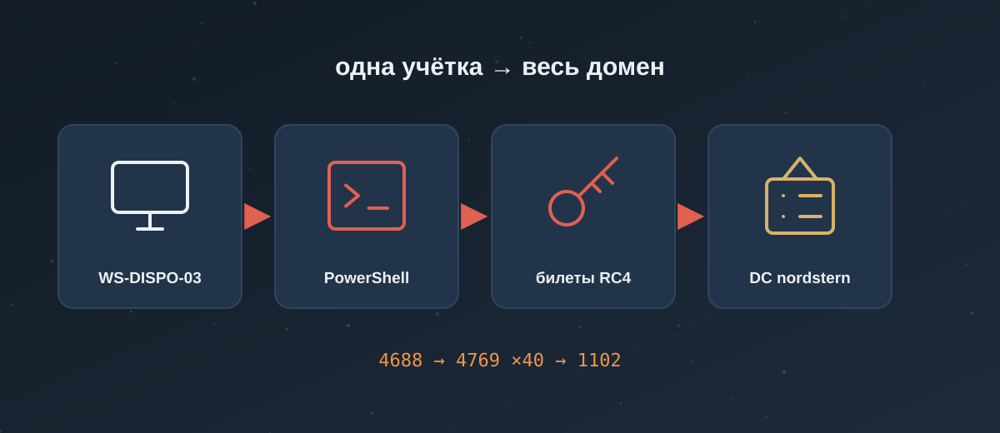

Учебник: Windows и Active Directory
Модуль: Cyber Security 101 · Комнаты: Windows Fundamentals 1, 2, 3 и Active Directory Basics.
Что будешь уметь после учебника:
- по пути, учётке и родителю процесса отличать нормальную Windows от следов атаки;
- открыть нужный журнал Windows и найти в нём входы, запуски программ, новые службы и билеты Kerberos;
- найти, как атакующий закрепился: ключи Run, службы, задачи планировщика;
- понять по журналам, что антивирус ослепили, а резервные копии удалили;
- объяснить, как устроен домен Active Directory, и узнать в журналах перебор паролей и Kerberoasting;
- разобрать настоящие журналы Windows прямо на маке и коротко доложить по-немецки.
Маршрут:
- 🤔 Windows Fundamentals 1 — по желанию: всё важное есть в главе 1. Но там живая Windows в браузере, которой на маке нет. Есть время — пройди. ~30 мин.
- 🧪 Windows Fundamentals 2 — пройди: msconfig, Event Viewer и реестр на живой машине, на маке это не потрогать. ~30 мин.
- ⏭ Windows Fundamentals 3 — пропусти: в комнате клики по разделам Windows Security, главы 4 и 5 закрывают её задания глубже и с журналами. Экономия ~30 мин.
- 🧪 Active Directory Basics — пройди: настоящий домен, OU, делегирование и групповые политики руками. THM время не указывает.
- Главы: 6 обязательных 🔥, 1 бегло 👀.

Вспомни прошлое
Пять вопросов из прошлых учебников. Не помнишь — нормально: ответ раскроется с объяснением.
grep … | uniq -c | sort -rn. Счёт получился странный — один адрес встречается несколько раз. Что забыл?Get-Process | Select Name, Id. Что делает | Select?Пролог: Spätschicht в Nordstern
14:08, Spätschicht (поздняя смена, 14:00–22:00), учебная фирма Nordstern Logistik GmbH (Фюрт, выдуманная). 340 сотрудников, два склада, домен
nordstern.local. В очереди первый алерт от EDR (программы-охранника на компьютере, она записывает, что запускалось): «Учебный алерт: WINWORD.EXE запустил cmd.exe на WS-DISPO-03, учётка m.becker». WS-DISPO-03 — рабочий компьютер диспетчера склада.
Фирма, домен, компьютеры и учётки выдуманы. Внешние адреса взяты из диапазонов, которые специально отведены для примеров, внутренние — частные. Реальные журналы будут в практике, и там всегда сказано, откуда они.
Через весь учебник ты ведёшь этот инцидент:
- Глава 1 — что за файл открыл диспетчер и что за учётка у него.
- Главы 2 и 3 — что запустилось и как атакующий закрепился, чтобы пережить перезагрузку.
- Главы 4 и 5 — что он сделал с защитой компьютера.
- Главы 6 и 7 — куда он идёт дальше: в домен, к паролям служебных учёток.
Глава 1. Windows изнутри: версии, диск, NTFS, учётки (Windows Fundamentals 1)
Аналогия
Windows — как большой склад с адресной системой. У каждой коробки есть адрес: зона, ряд, полка. Опытный кладовщик по одному адресу понимает, нормально ли коробка там лежит. Удобрения в зоне продуктов — сразу вопрос.
С файлами то же самое. svchost.exe в C:\Windows\System32 — на своём месте. Тот же svchost.exe в C:\Users\Public — коробка не в той зоне.
Ты на смене
Алерт про WS-DISPO-03. В консоли EDR видно: Word открыл файл
C:\Users\m.becker\Downloads\Rechnung_0914.docm, а потом запустил командную строку. Первые вопросы: какая это Windows, откуда взялся файл, что это за файл и кто такой m.becker — обычный сотрудник или администратор.
Всё, что ниже, — инструменты для этих четырёх ответов.
Сначала слова, без которых дальше не понять
Исполняемый файл (executable). Файл-программа: если его запустить, он начинает что-то делать. В Windows такие файлы кончаются на .exe. Документ .docx сам ничего не делает, а odsync.exe — делает. Поэтому SOC всегда смотрит на .exe внимательнее.
Процесс (process). Запущенная программа. Файл notepad.exe лежит на диске и ничего не делает. Открыл Блокнот — появился процесс notepad.exe. У каждого процесса есть номер — PID (process ID).
Учётка (учётная запись, account). Логин на компьютере: имя и пароль. У каждого человека своя, у служебных программ — свои. В журналах Windows учётку пишут как ДОМЕН\имя, например NORDSTERN\m.becker.
Командная строка (cmd) и PowerShell. Два окна, где Windows управляют текстом, а не мышкой, — как Терминал на маке. cmd.exe старая и простая, powershell.exe новая и мощная. Команды в этой главе работают в одной из них, где именно — подписано.
Журнал событий (event log). Дневник Windows: система сама записывает туда события — кто вошёл, что запустилось, что сломалось. Подробно — в главе 2.
Путь (path). Полный адрес файла от диска до имени: C:\Users\Public\odsync.exe. В алертах файл всегда указан путём, и по нему видно, нормальное ли это место.
NTFS (New Technology File System). Способ, которым Windows раскладывает данные на диске, — файловая система. NTFS, кроме самих файлов, хранит, кто ими владеет и кто может их читать и менять, и умеет прятать к файлу невидимые приписки. Почти все диски Windows — NTFS; флешки часто в FAT32 или exFAT, где этого нет.
SID (Security Identifier). Номер учётки внутри Windows, вида S-1-5-21-…-1104. В журналах учётка часто записана именно номером, а не именем.
Хэш (hash). Отпечаток содержимого файла — длинная строка из цифр и букв. Одинаковые файлы — одинаковый хэш, изменил одну букву — хэш совсем другой. По нему файл опознают, как бы его ни назвали.
UAC (User Account Control). Окно «Разрешить этому приложению вносить изменения?». Даже администратор работает с урезанными правами, пока не нажмёт «Да».
Какая это Windows: версия и издание
Зачем на смене: в тикет пишут версию системы. От неё зависит, есть ли на компьютере нужные защиты и получает ли он ещё обновления безопасности.
Аналогия: издание Windows — как комплектация машины. Модель одна, но в базовой нет круиз-контроля, а в «бизнес» есть.
Как устроено. У Windows два числа: версия (Windows 10, Windows 11, Windows Server 2022) и издание (edition) — набор возможностей:
| Издание | Где встретишь | Что важно для SOC |
|---|---|---|
| Home | домашние ноутбуки | нельзя подключить к домену компании (глава 6) |
| Pro | маленькие фирмы, ноутбуки сотрудников | входит в домен, есть BitLocker (шифрование диска, глава 5) |
| Enterprise / Education | крупные компании, вузы | всё из Pro плюс корпоративные защиты |
| Server (2016, 2019, 2022, 2025) | серверы: почта, файлы, контроллеры домена | работает круглые сутки, на нём важные данные |
Ещё есть номер сборки (build) — точная версия после обновлений. По нему видно, насколько свежая система.
Команда (cmd или PowerShell):
systeminfo | findstr /B /C:"OS Name" /C:"OS Version"
systeminfo печатает паспорт системы на полсотни строк. | передаёт этот вывод следующей команде, как в Linux. findstr — аналог grep в Windows: оставляет строки с нужным текстом. /B — «строка начинается с», /C:"…" — искать вот эту фразу целиком.
OS Name: Microsoft Windows 11 Pro
OS Version: 10.0.22631 N/A Build 22631
Учебный пример вывода. Как читать:
OS Name— версия и издание: Windows 11 Pro;OS Version—10.0.22631: у Windows 10 и 11 номер версии внутри одинаковый,10.0, различаются они сборкой. Сборки от 22000 — Windows 11, ниже — Windows 10.
Графически то же самое показывает winver (окно «О программе Windows»).
Варианты, которые встретятся. На немецкой Windows строки называются по-немецки: Betriebssystemname и Betriebssystemversion — и findstr с английскими словами ничего не найдёт. Тогда ищи по номеру сборки: systeminfo | findstr Build. В PowerShell есть способ без языка: Get-ComputerInfo -Property OsName, OsVersion.
Если не получилось:
- Пустой вывод — система не английская, см. «Варианты» выше.
systeminfoдумает 10–20 секунд — это нормально, он собирает много данных.
Ошибка новичка: записать в тикет «Windows 10», потому что внутри написано 10.0. Смотри на OS Name и сборку.
Почему версия важна: Windows 10 Home и Pro не получают обновлений с 14.10.2025. Такой компьютер без платной расширенной поддержки — уязвимость сама по себе, это пишут в рекомендации.
В тикет:
WS-DISPO-03: Windows 11 Pro, Build 22631, в домене nordstern.local.
Путь — это улика
Зачем на смене: в каждом алерте есть путь к файлу. По нему за секунду видно, норма это или нет.
Аналогия: путь — почтовый адрес файла: страна → город → улица → дом. C:\Users\Public\odsync.exe = «диск C → папка Users → папка Public → файл odsync.exe».
Как устроено. В отличие от Linux, у Windows несколько корней — дисков, у каждого буква: C: — обычно системный диск, D: — второй диск или флешка. Папки в пути разделяет обратная косая черта \ (в Linux и на маке — прямая /). Регистр букв Windows не различает: C:\WINDOWS и c:\windows — одна папка.
Windows раскладывает файлы по известным местам. Атакующие кладут свои программы туда, куда может писать любой пользователь, и называют их как системные. Поэтому место важнее имени:
| Путь | Что там | Норма | Когда тревога |
|---|---|---|---|
C:\Windows\System32 |
системные программы | svchost.exe, lsass.exe, cmd.exe |
новый незнакомый файл |
C:\Program Files |
установленные программы | Office, браузеры | редко: сюда без админа не записать |
C:\ProgramData |
общие данные программ, скрыта | настройки, кеши | .exe с системными именами |
C:\Users\<учётка>\AppData |
данные программ пользователя, скрыта | профили браузеров, Teams, OneDrive | .exe в AppData\Roaming или AppData\Local\Temp, которые запускаются при входе |
C:\Users\Public |
общая папка, писать могут все | почти пусто | любые .exe |
C:\Windows\Temp, %TEMP% |
временные файлы | установщики | инструменты атакующего |
Скрытая папка — та, которую Проводник (файловый менеджер Windows, как Finder) по умолчанию не показывает. Её видно, если включить «Вид → Скрытые элементы».
Переменные окружения — короткие имена для длинных путей. Их пишут между знаками процента:
| Переменная | Куда ведёт | Когда увидишь |
|---|---|---|
%SystemRoot% |
C:\Windows |
в путях служб и драйверов |
%USERPROFILE% |
C:\Users\<учётка> |
в путях программ пользователя |
%APPDATA% |
C:\Users\<учётка>\AppData\Roaming |
автозапуск, вредоносные скрипты |
%TEMP% |
C:\Users\<учётка>\AppData\Local\Temp |
скачанные и распакованные файлы |
Узнать, куда ведёт переменная, — echo %TEMP% в cmd или $env:TEMP в PowerShell.
Команда — откуда запущен процесс (PowerShell):
Get-Process -Name svchost | Select-Object Id, Path -First 3
Get-Process — список процессов, -Name svchost — только с этим именем, Select-Object Id, Path — оставить номер и путь, -First 3 — первые три.
Id Path
-- ----
904 C:\Windows\system32\svchost.exe
1012 C:\Windows\system32\svchost.exe
6120 C:\Users\Public\svchost.exe
Учебный пример. Первые два — норма. Третий — тот же svchost.exe, но из общей папки. Это не системный процесс, а маскировка.
Варианты, которые встретятся. На 64-битной Windows есть ещё C:\Windows\SysWOW64 — там системные программы для старых 32-битных приложений, и svchost.exe оттуда тоже бывает настоящим. И C:\Program Files (x86) — установленные 32-битные программы.
Если не получилось:
- В колонке
Pathпусто — у тебя нет прав видеть путь процессов другой учётки или системы. Запусти PowerShell от имени администратора (правой кнопкой → «Запуск от имени администратора»). Cannot find a process with the name "svchost1"— опечатка в имени, имя без.exe.
Ошибка новичка: увидеть в пути \Windows\ и успокоиться. C:\Windows\Temp\svchost.exe — не системный файл, хотя путь начинается «правильно». Системный svchost.exe живёт только в System32 (и SysWOW64).
В тикет:
Процесс svchost.exe (PID 6120) запущен из C:\Users\Public\ — не системный путь, маскировка под системный процесс.
C:\Users\Public\svchost.exe от учётки m.becker. Родитель — powershell.exe.svchost.exe живёт только в System32 и запускается системой, а не из PowerShell пользователя. Неверно всё: путь, родитель, учётка. Эскалация с путём, хэшем и деревом процессов.svchost.exe не запускается из C:\Users\Public.NTFS: файловая система с правами
Зачем на смене: NTFS хранит, кто владеет файлом и кто может его читать и менять. По этому видно, мог ли обычный сотрудник положить файл в системную папку — и что увидит атакующий с его учёткой.
Аналогия: файловая система — способ разложить данные на диске, как система стеллажей на складе. NTFS — стеллажи с замками и журналом: на каждой полке написано, у кого ключ.
Как устроено. Почти все диски Windows отформатированы в NTFS. Флешки — часто в FAT32 или exFAT: это простые стеллажи без замков. Главная разница для SOC: в NTFS есть права доступа и альтернативные потоки данных (следующий раздел), а в FAT32 и exFAT — нет.
Права в NTFS даются учётке или группе. Основные:
| Право | Что разрешает | Когда увидишь в расследовании |
|---|---|---|
| Full control (F) | всё, включая смену прав | у администраторов и SYSTEM — норма |
| Modify (M) | читать, менять, удалять | у пользователя на его файлах |
| Read & execute (RX) | читать и запускать | у всех на системных программах |
| Read (R) | только читать | общие документы |
| Write (W) | создавать и дописывать | папки, куда все могут писать, — Users\Public, Temp |
Наследование — права папки сами переходят на всё, что в неё кладут. Поэтому файл в C:\Users\Public по умолчанию может поменять любой.
Команда (cmd или PowerShell): icacls показывает права.
icacls C:\Users\Public\odsync.exe
C:\Users\Public\odsync.exe NT AUTHORITY\SYSTEM:(I)(F)
BUILTIN\Administrators:(I)(F)
NT AUTHORITY\INTERACTIVE:(I)(M)
BUILTIN\Users:(I)(RX)
Successfully processed 1 files; Failed processing 0 files
Учебный пример. Как читать: каждая строка — кто и что может. (I) — право унаследовано от папки, (F), (M), (RX) — права из таблицы. INTERACTIVE — любой, кто вошёл за этим компьютером. Значит, файл мог положить и подменить любой сотрудник, вошедший на WS-DISPO-03, — права администратора не понадобились.
Графически то же — «Свойства файла → Безопасность» (Properties → Security).
Варианты, которые встретятся. У папок в icacls бывают (OI) и (CI) — «право переходит на файлы» и «на подпапки». На немецкой Windows группы называются иначе: VORDEFINIERT\Administratoren, NT-AUTORITÄT\SYSTEM — смысл тот же.
Если не получилось: Access is denied — у твоей учётки нет права даже читать права файла. Нужна консоль от имени администратора.
Ошибка новичка: скопировать улику на флешку FAT32 и потерять права и потоки. Улики копируют на диск NTFS или упаковывают в архив, который хранит эти данные.
Альтернативные потоки и метка «из интернета»
Зачем на смене: так Windows помечает скачанные файлы. По этой метке видно, откуда пришёл документ m.becker, — и это первый ответ в тикете.
Аналогия: у каждой коробки на складе, кроме содержимого, может быть наклейка на дне. Снаружи её не видно, вес коробки почти не меняется. Почтовая служба лепит такую наклейку: «пришло из внешнего мира».
Как устроено. У файла в NTFS, кроме основного содержимого, могут быть скрытые альтернативные потоки данных (Alternate Data Streams, ADS). В Проводнике их не видно, размер файла не меняется.
Самый важный поток — Zone.Identifier. Его дописывают браузер и почтовая программа к каждому скачанному файлу. Это Mark of the Web (MotW) — «метка интернета». Офис, видя её, открывает документ в защищённом режиме и блокирует макросы. Макрос — маленькая программа внутри документа Office; файлы .docm, .xlsm умеют их хранить.
Команда 1 (cmd): dir /R показывает потоки.
dir /R C:\Users\m.becker\Downloads
14.09.2026 13:52 48 128 Rechnung_0914.docm
154 Rechnung_0914.docm:Zone.Identifier:$DATA
Вторая строка — поток: имя_файла:имя_потока:$DATA, размер 154 байта.
Команда 2 (PowerShell): прочитать поток.
Get-Content .\Rechnung_0914.docm -Stream Zone.Identifier
[ZoneTransfer]
ZoneId=3
ReferrerUrl=https://mail.nordstern-logistik.example/
HostUrl=https://files.example/r/Rechnung_0914.docm
Учебный пример. Как читать:
| Поле | Что значит | Зачем тебе |
|---|---|---|
ZoneId |
зона, откуда файл: 0 — этот компьютер, 1 — локальная сеть, 2 — доверенные сайты, 3 — интернет, 4 — опасные сайты | 3 — пришёл снаружи |
ReferrerUrl |
страница, с которой перешли к скачиванию | здесь — веб-почта: файл пришёл письмом |
HostUrl |
откуда скачан сам файл | адрес в тикет и на блокировку |
Варианты, которые встретятся.
- Поля
ReferrerUrlиHostUrlпишут не все программы: бывает толькоZoneId=3. - Атакующие стараются, чтобы метки не было: упаковывают файл в образ диска (ISO, VHD) или архив, который метку не переносит. Это обход метки (T1553.005). Нет метки — нет защищённого режима.
- Атакующие прячут в ADS и свои файлы (T1564.004):
notes.txt:payload.exe. - На маке есть родственник метки — атрибут
com.apple.quarantine. Из-за него macOS спрашивает «Вы уверены, что хотите открыть программу, загруженную из интернета?».
Если не получилось:
Could not open alternate data stream 'Zone.Identifier'— потока нет. Значит, файл не скачан браузером, а создан на месте, распакован из архива без метки или метку сняли.dir /Rне показывает строки с:$DATA— то же самое.
Ошибка новичка: решить «раз метки нет — файл безопасный, он локальный». Отсутствие метки у документа в Downloads — само по себе вопрос: кто и как её убрал.
В тикет:
Rechnung_0914.docm: Zone.Identifier ZoneId=3 (интернет), ReferrerUrl — веб-почта,
HostUrl https://files.example/r/Rechnung_0914.docm. Документ с макросами, получен по почте.
Хэш файла: Get-FileHash
Зачем на смене: файл в тикет передают по хэшу SHA-256, а не по имени. Имя меняют за секунду, хэш — отпечаток содержимого. По нему файл проверяют в VirusTotal и ищут на других машинах.
Аналогия: хэш — отпечаток пальца файла. Переодеть человека легко, отпечаток останется тем же. Изменишь в файле одну букву — отпечаток станет совсем другим.
Как устроено. Программа читает файл целиком и считает из него число фиксированной длины. SHA-256 — самый ходовой способ: 64 знака из цифр и букв a–f. Два разных файла с одинаковым SHA-256 на практике не встречаются.
Команда (PowerShell):
Get-FileHash C:\Users\Public\odsync.exe -Algorithm SHA256
Algorithm Hash Path
--------- ---- ----
SHA256 9F2B5C…E41A C:\Users\Public\odsync.exe
Учебный пример, хэш сокращён. В тикет — колонка Hash целиком.
В cmd то же делает certutil:
certutil -hashfile C:\Users\Public\odsync.exe SHA256
SHA256 hash of C:\Users\Public\odsync.exe:
9f2b5c…e41a
CertUtil: -hashfile command completed successfully.
Хэш — вторая строка. Большие или маленькие буквы — не важно, это один и тот же хэш.
Варианты: на маке — shasum -a 256 файл, в Linux — sha256sum файл. EDR обычно показывает хэш сам в карточке процесса.
Если не получилось:
The process cannot access the file because it is being used by another process— файл открыт работающей программой. Возьми хэш из EDR или из события Sysmon (глава 2).Cannot find path— опечатка в пути или файл уже удалили. Тогда ищи хэш в журналах: файлы, которые запускались, EDR хэширует сам.
Ошибка новичка: посчитать MD5 вместо SHA-256 (Get-FileHash без -Algorithm даёт SHA256, а certutil -hashfile файл без алгоритма — SHA1). Пиши алгоритм явно.
В тикет:
C:\Users\Public\odsync.exe, SHA-256 9f2b5c…e41a (полностью), на VirusTotal — проверяю.
Учётки и SID
Зачем на смене: в журналах Windows учётка часто записана не именем, а номером — SID. Надо за секунду понять, кто это: человек, администратор, система или «никто».
Аналогия: SID — табельный номер сотрудника. Имя на бейдже можно поменять, табельный номер — нет. Все права завязаны на номер.
Как устроено. SID (Security Identifier) — уникальный номер учётки или группы. Windows хранит права по SID, а не по имени: переименуй учётку — права останутся.
S-1-5-21-3461203602-4096304019-2269080069-1104
| Кусок | Что значит |
|---|---|
S-1-5-21 |
учётка домена или компьютера |
3461203602-4096304019-2269080069 |
номер этого домена или компьютера — одинаковый у всех его учёток |
1104 |
RID — номер учётки внутри домена |
По RID и коротким SID узнают встроенные учётки:
| SID или RID | Кто это | Когда увидишь и что значит |
|---|---|---|
| RID 500 | встроенный Administrator | вход под ним — повод спросить, кто это |
| RID 501 | Guest (гость) | по умолчанию выключен; включение — сигнал |
| RID 512 | группа Domain Admins | изменение состава — всегда в тикет |
S-1-5-18 |
SYSTEM — сама Windows | норма для служб; от неё работает почти всё системное |
S-1-5-19, S-1-5-20 |
LocalService, NetworkService | норма для служб |
S-1-0-0 |
Null SID, «никто» | в событиях, когда учётки не существует |
Учётки бывают двух видов:
- локальные — живут на одном компьютере, работают только на нём. Список — оснастка
lusrmgr.mscили командаnet user; - доменные — живут в Active Directory (глава 6), работают на всех компьютерах фирмы.
У каждой учётки свой профиль — папка C:\Users\<имя> с её документами, рабочим столом и AppData. Профиль создаётся при первом входе.
Команда: кто я и какой у меня SID (cmd или PowerShell).
whoami /user
USER INFORMATION
----------------
User Name SID
================== ==============================================
nordstern\m.becker S-1-5-21-3461203602-4096304019-2269080069-1104
Учебный пример. До \ — домен (nordstern), после — имя. SID кончается на 1104 — обычная учётка, не встроенная.
Локальные учётки и их состояние (PowerShell):
Get-LocalUser | Select-Object Name, Enabled, SID
Name Enabled SID
---- ------- ---
Administrator False S-1-5-21-1987365112-3820121834-3410208271-500
DefaultAccount False S-1-5-21-1987365112-3820121834-3410208271-503
Guest False S-1-5-21-1987365112-3820121834-3410208271-501
WDAGUtilityAccount False S-1-5-21-1987365112-3820121834-3410208271-504
Учебный пример. Enabled False у Administrator и Guest — норма для рабочей станции: встроенные учётки выключены. True у Guest — находка.
Варианты: на немецкой Windows встроенные учётки называются Administrator и Gast, группа — Administratoren. SID при этом тот же, поэтому в SIEM ищут по SID, а не по имени.
Если не получилось: Get-LocalUser не найден — очень старый PowerShell. Используй net user (имена) и wmic useraccount get name,sid (SID; wmic в новых Windows убирают, может не быть).
Ошибка новичка: искать в SIEM учётку по имени Administrator и не найти её на немецком сервере. Ищи по концу SID -500.
UAC: почему администратор не всегда администратор
Зачем на смене: в алертах бывает пометка «процесс запущен с повышенными правами». Это про UAC. Повышенные права у процесса из письма — сильный сигнал.
Аналогия: у администратора два пропуска: обычный и «в серверную». Ходит он с обычным. Чтобы пройти в серверную, надо показать второй, и охрана каждый раз спрашивает: «Точно?».
Как устроено. Даже администратор по умолчанию работает с урезанными правами. Когда программе нужны полные права, появляется окно UAC (User Account Control): «Разрешить этому приложению вносить изменения на устройстве?». Только после «Да» программа получает полный набор.
У каждого процесса есть уровень целостности (integrity level) — насколько ему доверяют:
| Уровень | У кого | Когда увидишь |
|---|---|---|
| System | службы Windows | норма для системных процессов |
| High | процесс, запущенный с полными правами | «Запуск от имени администратора», установщики |
| Medium | обычные программы пользователя | Word, браузер, Проводник |
| Low | песочницы браузера | вкладки браузера |
Команда: уровень своей консоли (cmd или PowerShell).
whoami /groups | findstr Label
Mandatory Label\Medium Mandatory Level Label S-1-16-8192
Medium — консоль без повышения. В консоли «от имени администратора» будет High Mandatory Level.
Что это значит для SOC:
- В событии запуска процесса 4688 (глава 2) есть поле
TokenElevationType.%%1937— процесс получил полные права через повышение,%%1938— урезанные,%%1936— полные без всякого окна (встроенный Administrator или выключенный UAC). - Атакующему мало быть администратором: ему надо получить полные права без окна, которое увидит сотрудник. Это отдельная техника — обход UAC (T1548.002).
- Выключенный UAC на рабочей станции (ползунок «Никогда не уведомлять») — плохая настройка, её пишут в рекомендации.
Ошибка новичка: считать, что раз учётка в группе администраторов, все её процессы — «админские». Word у администратора работает с Medium, пока не было повышения.
S-1-5-21-…-500. Что это за учётка?Параметры, Панель управления, Диспетчер задач
Зачем на смене: это первые окна, которые открывают в комнате и по которым тебе будут диктовать по телефону. Для SOC в них немного, но где что — знать надо.
- Параметры (Settings,
Win+I) — новое окно настроек: обновления, учётки, «Безопасность Windows». - Панель управления (Control Panel, команда
control) — старое окно. Часть настроек есть только здесь, например расширенные свойства системы. - Диспетчер задач (Task Manager,
Ctrl+Shift+Esc) — процессы, нагрузка, вкладка «Автозагрузка». Удобен, чтобы быстро увидеть, кто ест процессор. Родителя процесса и полной командной строки в нём по умолчанию нет — для этого есть журналы и EDR (глава 2). Колонку «Командная строка» можно включить: правой кнопкой по заголовку колонок на вкладке «Подробности».
Win — клавиша с логотипом Windows. На маке в браузерной машине THM её заменяет пункт в меню виртуальной клавиатуры.
Копнуть глубже: короткие имена вроде PROGRA~1
NTFS умеет хранить у файла второе, короткое имя в старом формате «8 знаков + 3 знака расширения». C:\Program Files превращается в C:\PROGRA~1, C:\Users\m.becker\AppData\Local\Temp — в C:\Users\MBECKE~1\AppData\Local\Temp.
Где увидишь: в командных строках процессов, в путях из старых программ и иногда у атакующих — короткое имя не совпадает с правилом, которое ищет Program Files целиком. Посмотреть короткие имена: dir /x в cmd, они в отдельной колонке.
Читать так же, как длинный путь: PROGRA~1 — это Program Files, PROGRA~2 — обычно Program Files (x86).
Как сказать на смене
- «Die Datei wurde laut Zone.Identifier aus dem Internet heruntergeladen.» — По Zone.Identifier файл скачан из интернета.
- «Der Prozess läuft nicht aus System32, sondern aus C:\Users\Public.» — Процесс работает не из System32, а из C:\Users\Public.
Сделай сам
- На маке: скачай любой файл из браузера и выполни в Терминале
xattr -l ~/Downloads/<файл>. Найдиcom.apple.quarantine— это родственникZone.Identifier. - Там же:
shasum -a 256 ~/Downloads/<файл>. Поменяй в копии файла одну букву (для текстового файла) и сравни хэши. - Если открыл комнату Windows Fundamentals 1: выполни
whoami /user,systeminfo | findstr Build,icacls C:\Users\Publicи разбери каждый вывод по таблицам главы. - Разбери без компьютера: SID
S-1-5-21-1111-2222-3333-501— кто это и что делать, если онEnabled True?
Термины
| EN | RU | DE |
|---|---|---|
| operating system | операционная система | Betriebssystem |
| edition / build | издание / сборка | Edition / Build |
| file system | файловая система | Dateisystem |
| permissions | права доступа | Berechtigungen |
| alternate data stream | альтернативный поток данных | alternativer Datenstrom |
| Mark of the Web | метка интернета | Mark of the Web |
| hash | хэш | Hashwert |
| security identifier (SID) | идентификатор безопасности | Sicherheits-ID |
| user profile | профиль пользователя | Benutzerprofil |
| elevated privileges | повышенные права | erhöhte Rechte |
Выжимка
- Версию и сборку бери из
systeminfo, на немецкой Windows строки по-немецки. - Путь — улика: системные файлы только в
System32(иSysWOW64);.exeвUsers\Public,Temp,AppData— повод присмотреться. - NTFS хранит права (
icacls) и альтернативные потоки.Zone.IdentifierсZoneId=3— файл из интернета,HostUrl— откуда. - Файл в тикет — по SHA-256 (
Get-FileHash), не по имени. - SID — табельный номер: RID 500 — Administrator, 501 — Guest,
S-1-5-18— SYSTEM. Искать по SID, имена бывают на немецком.
Связи
- Cyber Security 101 → Linux Fundamentals: права и учётки в Linux — та же идея, хэш через
sha256sum. - Cyber Security 101 → Windows Command Line и Windows PowerShell: команды этой главы подробнее.
Глава 2. Утилиты и журналы: где смотреть (Windows Fundamentals 2)
Аналогия
Windows — как автомобиль. Приборная панель (Диспетчер задач, «Параметры») показывает главное: скорость, бензин. Механик подключается к диагностическому разъёму и видит всё: ошибки, историю, каждый датчик.
Утилиты из этой главы — твой диагностический разъём. А журналы событий — бортовой самописец: что было, когда и в каком порядке.
Ты на смене
Ты знаешь, что Word запустил командную строку на WS-DISPO-03. Теперь надо увидеть это в журналах: что запустилось, под кем, в каком порядке, входил ли кто-то на машину. И понять, что из увиденного — норма.
Сначала слова, без которых дальше не понять
Утилита (utility). Небольшая программа для одного дела: показать настройки, службы, нагрузку. В Windows их много, и почти все запускаются по короткому имени: нажать Win+R, набрать имя, Enter.
Оснастка (snap-in, файл .msc). Окно для администрирования одной части Windows: учётки, журналы, службы. eventvwr.msc — журналы, services.msc — службы. Все оснастки открываются одинаково: Win+R → имя.
Служба (service). Программа, которая работает в фоне без окна, обычно с загрузки компьютера и до выключения. Например, печать, обновления, антивирус. У службы есть имя, исполняемый файл и учётка, под которой она работает. Как ночной сторож: никто его не видит, но он на месте.
Событие (event). Одна запись в журнале: «в 14:08 учётка m.becker вошла в систему». У каждого события есть код — Event ID, число, по которому его узнают: 4624 — удачный вход, 4625 — неудачный.
Аудит (audit). Настройка «что записывать в журнал». Если аудит какого-то действия выключен, Windows его не запишет — и в журнале будет пусто, хотя действие было.
Родительский процесс (parent). Процесс, который запустил другой процесс. Ты дважды кликнул по документу — Проводник (explorer.exe) запустил Word: Проводник — родитель, Word — дочерний (child). Цепочка родителей — дерево процессов.
SIEM (Security Information and Event Management). Система, куда стекаются журналы со всех компьютеров фирмы; там ты ищешь события и получаешь алерты. Например, Splunk или Microsoft Sentinel.
Sysmon (System Monitor). Бесплатная программа Microsoft, которая пишет в журнал гораздо подробнее, чем сама Windows: запуск каждого процесса с командной строкой и хэшем, сетевые соединения, изменения реестра. В SOC её ставят почти везде, где нет полноценного EDR.
Утилиты: msconfig, msinfo32, compmgmt, resmon
Зачем на смене: в комнате их называют по очереди, а на смене тебе по телефону скажут «открой msconfig». Важно не меню, а что в каждой искать.
Аналогия: это ящики с инструментами у механика. В одном отвёртки, в другом ключи — и опытный знает, в какой лезть.
Как устроено. Каждая утилита — отдельный .exe или .msc в System32, запуск через Win+R:
| Утилита | Что показывает | Что в ней ищет аналитик |
|---|---|---|
msconfig |
вкладки General (режим загрузки), Boot (параметры загрузки, безопасный режим), Services, Startup, Tools | Services с галочкой «Не показывать службы Microsoft» — остаются сторонние; Tools — вход во все остальные утилиты |
msinfo32 |
паспорт системы: версия, железо, драйверы, переменные окружения | версию Windows и сборку для тикета; в «Программная среда → Переменные среды» — пути %TEMP% и другие |
compmgmt.msc |
Computer Management — всё администрирование в одном окне | планировщик, журналы, общие папки, учётки, службы |
resmon |
Resource Monitor: процессы, диск, сеть, память вживую | какой процесс прямо сейчас соединяется с сетью и с каким адресом |
perfmon |
Performance Monitor: счётчики и графики | SOC редко, чаще админам |
UserAccountControlSettings |
ползунок UAC из главы 1 | выключен ли UAC — пишут в рекомендации |
Внутри Computer Management — разделы, которые ещё встретятся:
| Раздел | Что там | Глава |
|---|---|---|
| Task Scheduler | задачи по расписанию | 3 |
| Event Viewer | журналы событий | эта |
| Shared Folders | общие папки, в том числе скрытые C$ и ADMIN$ |
7 |
| Local Users and Groups | локальные учётки и группы | 1 |
| Performance | тот же perfmon | — |
| Disk Management | разделы дисков | — |
| Services and Applications | службы и WMI | 3 |
WMI (Windows Management Instrumentation) — интерфейс, через который программы и администраторы управляют Windows, в том числе удалённо. Атакующие тоже им пользуются, поэтому в алертах встречается процесс wmiprvse.exe.
Скрытые общие папки C$ и ADMIN$ Windows создаёт сама: это весь диск C и папка C:\Windows, открытые по сети только администраторам. Знак $ в конце прячет папку из списка.
Варианты: вкладка Startup в msconfig на Windows 10 и 11 пустая и отправляет в Диспетчер задач — автозагрузку перенесли туда.
Если не получилось: Windows cannot find 'compmgmt' — забыл .msc. Оснастки запускаются с расширением: compmgmt.msc, eventvwr.msc.
Ошибка новичка: искать подозрительное в Диспетчере задач. Он показывает мало: ни родителя процесса, ни полной командной строки по умолчанию. Для этого есть журналы, EDR и Sysmon.
Командная строка: семь команд на каждый день
Зачем на смене: при удалённой проверке через консоль EDR графики нет. Эти команды набирают первыми, чтобы понять: где я, кто я, кто ещё здесь, с кем машина говорит по сети.
Аналогия: врач на приёме сначала меряет давление и температуру. Это не диагноз, но без этого дальше не идут.
Команды (cmd):
hostname :: имя машины — убедись, что ты на нужной
whoami :: под какой учёткой ты работаешь
ipconfig /all :: адреса, DNS, MAC
netstat -ano :: соединения и номер процесса у каждого
net user :: локальные учётки
net localgroup administrators :: кто в локальных администраторах
quser :: кто сейчас вошёл в систему
:: в cmd — комментарий, как # в Linux.
Вывод net localgroup administrators (учебный):
Alias name administrators
Comment Administrators have complete and unrestricted access to the computer/domain
Members
-------------------------------------------------------------------------------
Administrator
NORDSTERN\Domain Admins
NORDSTERN\m.becker
The command completed successfully.
Как читать: под чертой — члены группы. Встроенный Administrator и группа админов домена — норма. Обычный сотрудник m.becker в локальных админах — плохая практика и находка для отчёта: всё, что запустит макрос, получит права администратора машины.
Вывод quser (учебный):
USERNAME SESSIONNAME ID STATE IDLE TIME LOGON TIME
>m.becker console 1 Active none 14.09.2026 07:58
adm.schulz rdp-tcp#3 2 Active 4 14.09.2026 14:21
Как читать: console — человек за клавиатурой, rdp-tcp#… — вход по RDP (удалённый рабочий стол, порт 3389). > — твоя сессия. Админ, зашедший по RDP на рабочую станцию диспетчера в разгар инцидента, — вопрос в тикет: ждали его или нет.
Вывод netstat -ano (учебный, сокращён):
Proto Local Address Foreign Address State PID
TCP 0.0.0.0:445 0.0.0.0:0 LISTENING 4
TCP 192.168.20.43:50532 203.0.113.80:443 ESTABLISHED 6120
| Колонка | Что значит | Зачем тебе |
|---|---|---|
Proto |
протокол, TCP или UDP | почти всегда TCP |
Local Address |
свой адрес и порт — номер «двери» соединения | 0.0.0.0:445 — компьютер ждёт подключений на 445 со всех адресов |
Foreign Address |
адрес и порт другой стороны | куда идёт соединение |
State |
LISTENING — ждёт, ESTABLISHED — соединение открыто |
открытые соединения наружу — главное |
PID |
номер процесса | связать соединение с программой |
По PID процесс находят так:
tasklist /fi "PID eq 6120"
Image Name PID Session Name Session# Mem Usage
========================= ======== ================ =========== ============
svchost.exe 6120 Console 1 12 404 K
Порт 445 у PID 4 — норма: это SMB (общие папки Windows), его держит сама система (PID 4 — процесс System). Соединение с внешним адресом на 443 от «svchost.exe» с PID 6120 — тот самый поддельный svchost из главы 1. Флаг -b у netstat показывает имя программы сразу, но нужен админ.
Варианты: в PowerShell те же данные — Get-NetTCPConnection -State Established (колонка OwningProcess = PID), Get-LocalGroupMember Administrators.
Если не получилось:
The requested operation requires elevationуnetstat -b— нужна консоль от имени администратора.quserне найден — на Windows Home этой команды нет; смотри Диспетчер задач → «Пользователи».
Ошибка новичка: испугаться длинного списка LISTENING в netstat. Windows всегда слушает с десяток портов (135, 445, 139 и другие). Смотри на ESTABLISHED к внешним адресам и на то, какой процесс их держит.
В тикет:
WS-DISPO-03: m.becker в локальных администраторах. Процесс svchost.exe (PID 6120, C:\Users\Public)
держит соединение с 203.0.113.80:443.
Event Viewer: журналы Windows
Зачем на смене: почти каждый алерт SIEM начинается с события из этих журналов. Если SIEM ещё не собирает журналы с машины, Event Viewer — единственное место, где видно, что было.
Аналогия: бортовой самописец. Он не мешает полёту, просто пишет всё подряд. После происшествия его открывают первым.
Как устроено. Журналы открывает eventvwr.msc. Главные — в разделе «Журналы Windows» (Windows Logs):
| Журнал | Что пишет | Когда смотришь |
|---|---|---|
| Security | входы, учётки, права, запуск процессов (если включён аудит) | почти всегда: кто, когда, откуда |
| System | службы, драйверы, перезагрузки, включение и выключение | новые службы (7045), перезагрузки |
| Application | ошибки и сообщения программ | падения программ, иногда антивирус |
Отдельно, в «Журналах приложений и служб» (Applications and Services Logs), лежат журналы PowerShell, Defender, Sysmon — у каждой программы свой.
У каждого события — код (Event ID), время, компьютер, источник и поля с подробностями. Коды, которые L1 узнаёт с первого взгляда:
| Код | Журнал | Что значит | Когда увидишь |
|---|---|---|---|
| 4624 | Security | удачный вход | постоянно; важен тип входа (ниже) |
| 4625 | Security | неудачный вход | перебор паролей, опечатки |
| 4672 | Security | вошёл кто-то с особыми правами (админ) | сразу после 4624 админа |
| 4688 | Security | запущен процесс | дерево процессов, если включён аудит |
| 4720 / 4732 | Security | создана учётка / добавлена в локальную группу | закрепление, новый «админ» |
| 7045 | System | установлена новая служба | закрепление, удалённый запуск |
| 4698 | Security | создана задача планировщика | закрепление |
| 4104 | PowerShell Operational | текст выполненного скрипта PowerShell | что именно делал PowerShell |
| 1102 | Security | журнал Security очищен | заметание следов |
Команда — журнал без окна (PowerShell от имени администратора):
Get-WinEvent -FilterHashtable @{LogName='Security'; Id=4625} -MaxEvents 3
Get-WinEvent читает журналы. -FilterHashtable @{…} — фильтр: журнал Security, код 4625. -MaxEvents 3 — три самых свежих.
ProviderName: Microsoft-Windows-Security-Auditing
TimeCreated Id LevelDisplayName Message
----------- -- ---------------- -------
14.09.2026 14:02:51 4625 Information An account failed to log on....
14.09.2026 14:02:49 4625 Information An account failed to log on....
14.09.2026 14:02:47 4625 Information An account failed to log on....
Учебный пример. Как читать: время, код, уровень (у событий аудита он всегда Information, даже у неудач — не удивляйся), начало сообщения. Три неудачи за четыре секунды — это не человек, который ошибся.
Чтобы увидеть поля одного события целиком:
Get-WinEvent -FilterHashtable @{LogName='Security'; Id=4625} -MaxEvents 1 | Format-List *
Format-List * — «покажи все свойства списком», среди них полный текст Message с учёткой, адресом и причиной.
В cmd то же делает wevtutil:
wevtutil qe Security /q:"*[System[(EventID=4625)]]" /c:3 /rd:true /f:text
qe — query events, /q: — фильтр, /c:3 — три штуки, /rd:true — сначала новые, /f:text — читаемым текстом.
Варианты, которые встретятся.
- На немецкой Windows текст сообщений по-немецки: 4624 — «Ein Konto wurde erfolgreich angemeldet», 4625 — «Fehler beim Anmelden eines Kontos». Коды те же, поэтому ищи по коду, а не по тексту.
- В SIEM поля называются так же, как в событии:
TargetUserName,IpAddress,LogonType. Это пригодится в практике.
Если не получилось:
Attempted to perform an unauthorized operation— журнал Security читает только администратор. Открой PowerShell от имени администратора.No events were found that match the specified selection criteria— таких событий нет. Причины: аудит этого действия выключен; журнал переполнился и старые записи затёрлись (размер журнала ограничен); журнал очистили — тогда ищи 1102.- Нужное событие есть в SIEM, но нет на машине — значит, журнал уже перезаписался. SIEM хранит дольше.
Ошибка новичка: решить «события нет — значит, ничего не было». Сначала проверь, включён ли аудит и не очищен ли журнал.
Типы входа в 4624
Зачем на смене: одно и то же событие «удачный вход» значит совсем разное в зависимости от типа. Тип — первое, что смотрят.
Аналогия: на проходной фиксируют не только «вошёл», но и как: через главный вход, через служебный, по гостевому пропуску. Гость ночью через служебный вход — вопрос.
Как устроено. В каждом 4624 есть поле LogonType — число:
| Тип | Что это | Норма | Когда тревога |
|---|---|---|---|
| 2 | интерактивный: человек за клавиатурой | рабочая станция в рабочее время | сервер, ночь |
| 3 | сетевой: обращение к общей папке, к службе | постоянно и много | один источник ко многим машинам |
| 4 | пакетный: задача планировщика | по расписанию | новая задача под чужой учёткой |
| 5 | служба запустилась под учёткой | при загрузке | служба под учёткой человека |
| 7 | разблокировка экрана | рабочая станция | — |
| 9 | новые учётные данные (runas /netonly) |
редко | любимый приём инструментов атакующих |
| 10 | удалённый рабочий стол (RDP) | админы на серверы | на рабочую станцию, ночью, из интернета |
| 11 | вход по сохранённым данным, без связи с контроллером домена | ноутбуки вне офиса | — |
Кроме типа, в 4624 важны ещё несколько полей. Наведи на поле:
TargetLogonId — нитка, за которую тянут: в событиях запуска процессов 4688 то же число стоит в поле SubjectLogonId. Так доказывают «после входа он запустил вот это».
Варианты: 4625 (неудача) имеет те же поля плюс причину — Status и SubStatus: 0xC000006A — неверный пароль, 0xC0000064 — такой учётки нет, 0xC0000234 — учётка заблокирована. Подробно — в главе 7.
Ошибка новичка: пугаться тысяч 4624 типа 3. Это фон: компьютеры постоянно обращаются друг к другу и к контроллеру домена. Смотри на необычное сочетание учётки, машины, типа и времени.
В тикет:
14:21 MESZ: вход adm.schulz на WS-DISPO-03, тип 10 (RDP), с 192.168.20.15, Kerberos.
Плановый ли — уточняю у IT.
Норма процессов: как выглядит здоровая Windows
Зачем на смене: атакующие называют свои файлы как системные. Отличить подделку можно, только если знаешь, кто кого запускает в норме. Это главная тема «За рамками THM» в этом учебнике: комнаты показывают атаку, а без нормы её не увидеть.
Аналогия: в здоровой Windows, как в семье, у каждого процесса свои родители. Если «svchost» называет мамой Word — это самозванец.
Как устроено. При загрузке Windows процессы запускаются в строгом порядке, и у каждого системного процесса известны родитель, путь, учётка и количество:
| Процесс | Кто родитель | Сколько штук | Путь | Учётка |
|---|---|---|---|---|
smss.exe |
System | один главный | System32 |
SYSTEM |
csrss.exe |
smss.exe (уже завершился, поэтому родителя не видно) |
обычно два | System32 |
SYSTEM |
wininit.exe |
smss.exe (завершился) |
один | System32 |
SYSTEM |
services.exe |
wininit.exe |
один | System32 |
SYSTEM |
lsass.exe |
wininit.exe |
один | System32 |
SYSTEM |
svchost.exe |
services.exe |
много | System32 |
SYSTEM, LocalService, NetworkService, иногда учётка пользователя |
explorer.exe |
userinit.exe (завершился) |
по одному на вошедшего человека | C:\Windows |
учётка человека |
lsass.exe — процесс, который проверяет пароли и хранит в памяти данные для входа. Поэтому атакующие так хотят его прочитать (T1003.001).
Как читать:
svchost.exeне отservices.exe— это не svchost.- Два
lsass.exe— один лишний, и это серьёзно. explorer.exeзапускаетpowershell.exe— человек открыл консоль, обычно норма.WINWORD.EXEзапускаетcmd.exeилиpowershell.exe— нет. Офисные программы оболочку не запускают.
Команда — родитель процесса без EDR (PowerShell):
Get-CimInstance Win32_Process -Filter "Name='cmd.exe'" | Select-Object ProcessId, ParentProcessId, CommandLine
Get-CimInstance Win32_Process — список процессов через WMI, с родителем и командной строкой. -Filter — только cmd.exe.
ProcessId ParentProcessId CommandLine
--------- --------------- -----------
5532 4180 cmd.exe /c powershell -nop -w hidden -enc JABXAEMAPQBO…
Учебный пример. Дальше — кто такой 4180: Get-Process -Id 4180 → WINWORD. Вот и цепочка.
Вот что было на WS-DISPO-03 по данным EDR:
-nop — без профиля, -w hidden — скрытое окно, -enc — команда закодирована в base64 (способ записать любые данные буквами и цифрами; человек так не печатает). Скрытое окно плюс base64 из Word — почти всегда вредонос.
Варианты:
- Норма меняется у программ, которые работают через свои помощники: Teams и браузеры запускают десятки дочерних процессов — это нормально. Сверяй с тем, как это выглядит на соседних машинах.
- Родитель
services.exeу неизвестной программы — значит, она запущена как служба (глава 3).
Если не получилось: ParentProcessId указывает на номер, которого уже нет, — родитель завершился. Номер могли занять другим процессом. Поэтому дерево надёжнее всего смотреть в EDR или в Sysmon: они записали его в момент запуска.
Ошибка новичка: проверять только имя процесса. Имя подделать легко. Путь, родителя и учётку — гораздо труднее, поэтому смотри на все три.
Копнуть глубже: почему в 4688 бывает пустая командная строка
Событие 4688 «запущен процесс» появляется, только если включена подкатегория аудита Process Creation. А командная строка в нём пишется, только если отдельно включена политика «Include command line in process creation events». По умолчанию её нет — и ты видишь cmd.exe без единого аргумента.
Поэтому в SOC часто ставят Sysmon. Его события в журнале Microsoft-Windows-Sysmon/Operational:
| Код Sysmon | Что пишет | Когда смотришь |
|---|---|---|
| 1 | запуск процесса: командная строка, родитель, хэш | дерево процессов |
| 3 | сетевое соединение процесса | кто ходит в интернет |
| 11 | создан файл | что скачали или распаковали |
| 13 | изменено значение реестра | автозапуск (глава 3) |
svchost.exe, родитель — explorer.exe, путь C:\Windows\System32. Норма?Как сказать на смене
- «WINWORD.EXE hat cmd.exe gestartet, das ist kein normales Verhalten.» — WINWORD.EXE запустил cmd.exe, это ненормальное поведение.
- «Der Login war vom Typ 10, also per RDP.» — Вход был типа 10, то есть по RDP.
Сделай сам
- В комнате Windows Fundamentals 2 открой
eventvwr.msc→ Security. Найди последний 4624 и выпиши тип входа, учётку иTargetLogonId. - Там же:
netstat -ano, найди строкуLISTENINGна 445 и проверьtasklist /fi "PID eq 4". - Там же:
Get-CimInstance Win32_Process -Filter "Name='svchost.exe'" | Select-Object ProcessId, ParentProcessId -First 3. Найди, кто родитель (Get-Process -Id <номер>) — должен бытьservices. - Без компьютера: по таблице нормы найди три ошибки в строке «
lsass.exe, родительexplorer.exe, путьC:\Users\Public, учётка m.becker».
Термины
| EN | RU | DE |
|---|---|---|
| event log | журнал событий | Ereignisprotokoll |
| event ID | код события | Ereignis-ID |
| logon type | тип входа | Anmeldetyp |
| parent process | родительский процесс | übergeordneter Prozess |
| process creation | создание процесса | Prozesserstellung |
| service | служба | Dienst |
| baseline | норма | Normalzustand |
Выжимка
- Утилиты открываются через
Win+R:msconfig,msinfo32,compmgmt.msc,resmon,eventvwr.msc. - Первые команды:
hostname,whoami,quser,netstat -ano,net localgroup administrators. - Журналы Security, System, Application; коды 4624, 4625, 4688, 7045, 4698, 4104, 1102. Нет события — сначала проверь аудит и 1102.
- Тип входа важнее самого 4624: 2 — человек, 3 — сеть, 10 — RDP.
TargetLogonIdсвязывает вход с тем, что было после. - Норма процессов: svchost от
services.exe, один lsass отwininit.exe, всё вSystem32. Подделку выдают путь, родитель и учётка.
Связи
- Cyber Security 101 → Windows Command Line:
netstat,tasklistи PowerShell-аналоги подробнее. - SOC Level 1 → Windows Event Logs и Sysmon: эти же события в больших журналах.
Глава 3. Реестр и автозапуск (Windows Fundamentals 2)
Аналогия
Реестр — это картотека настроек Windows, как в отделе кадров. Там записано всё: какие программы стоят, что запускать при входе, какие службы есть. Атакующий, который хочет вернуться после перезагрузки, подкладывает в картотеку одну карточку: «при входе сотрудника выдать ему ещё и вот это».
Ты на смене
В дереве процессов WS-DISPO-03 последний шаг —
reg.exe add …\Run /v OneDriveSync /d C:\Users\Public\odsync.exe. Через полчаса прилетают ещё два алерта: новая служба на том же компьютере и новая задача планировщика. Надо понять, одна ли это история, и найти все места, откуда атакующий запустится снова.
Сначала слова, без которых дальше не понять
Реестр (registry). База настроек Windows и программ. Не файл, который открывают Блокнотом, а дерево, похожее на папки. Читают его утилитой regedit или командой reg.
Закрепление (persistence). Способ атакующего остаться на компьютере после перезагрузки, выхода пользователя или удаления первого файла. Как запасной ключ под ковриком: дверь закрыли, а он всё равно войдёт.
Автозапуск (autostart). Любое место, откуда Windows сама запускает программу: при загрузке, при входе, по расписанию. Каждое такое место — возможное закрепление.
Планировщик заданий (Task Scheduler). Встроенный будильник Windows: «в 03:00 запустить резервное копирование», «при входе любого пользователя запустить обновление». Атакующие ставят на этот будильник свою программу.
Тип запуска службы (start type). Когда служба стартует: автоматически — при загрузке компьютера, вручную — когда её позовут, отключена — никогда.
Реестр: кусты, ключи, значения
Зачем на смене: в событиях и алертах путь в реестре пишут полностью: HKCU\Software\Microsoft\Windows\CurrentVersion\Run. Надо понимать, куда он ведёт и чья это настройка — одной учётки или всей машины.
Аналогия: реестр — шкаф с ящиками. Куст — отдельный шкаф, ключ — папка в ящике, значение — карточка в папке.
Как устроено. Реестр — дерево. Корни называются кустами (hives):
| Куст | Что в нём | Сокращение | Когда увидишь |
|---|---|---|---|
| HKEY_LOCAL_MACHINE | настройки всей машины | HKLM |
службы, автозапуск для всех, драйверы |
| HKEY_CURRENT_USER | настройки вошедшей учётки | HKCU |
автозапуск одной учётки — любимое место макросов, админ не нужен |
| HKEY_USERS | настройки всех загруженных профилей | HKU |
то же, что HKCU, но по SID: HKU\S-1-5-21-…-1104 |
| HKEY_CLASSES_ROOT | какие программы открывают какие файлы | HKCR |
подмена программы для типа файла |
| HKEY_CURRENT_CONFIG | текущее железо | HKCC |
почти никогда |
Внутри — ключи (как папки) и значения (как файлы). У значения три части: имя, тип и данные.
| Тип | Что хранит | Пример |
|---|---|---|
REG_SZ |
строку | путь к программе |
REG_EXPAND_SZ |
строку с переменными | %SystemRoot%\system32\svchost.exe |
REG_DWORD |
число | 1 — включено, 0 — выключено |
REG_MULTI_SZ |
список строк | список служб |
REG_BINARY |
байты | редко читаешь руками |
На диске кусты HKLM лежат файлами в C:\Windows\System32\config (SYSTEM, SOFTWARE, SAM), а HKCU каждой учётки — в файле NTUSER.DAT в её профиле. Это важно для расследования: эти файлы копируют с машины и читают на другой.
Команда (cmd или PowerShell):
reg query HKCU\Software\Microsoft\Windows\CurrentVersion\Run
reg query — показать ключ и его значения.
HKEY_CURRENT_USER\Software\Microsoft\Windows\CurrentVersion\Run
OneDrive REG_SZ "C:\Users\m.becker\AppData\Local\Microsoft\OneDrive\OneDrive.exe" /background
OneDriveSync REG_SZ C:\Users\Public\odsync.exe
Учебный пример. По колонкам: имя значения, тип, данные — что запускать. Графически то же самое открывает regedit: слева дерево ключей, справа значения.
В PowerShell реестр читается как диск:
Get-ItemProperty HKCU:\Software\Microsoft\Windows\CurrentVersion\Run
OneDrive : "C:\Users\m.becker\AppData\Local\Microsoft\OneDrive\OneDrive.exe" /background
OneDriveSync : C:\Users\Public\odsync.exe
PSPath : Microsoft.PowerShell.Core\Registry::HKEY_CURRENT_USER\Software\Microsoft\Windows\CurrentVersion\Run
Строки PS… PowerShell добавляет сам, это служебное — смотри на всё, что выше.
Если не получилось:
ERROR: The system was unable to find the specified registry key or value.— опечатка в пути или ключа нет. ПишиHKCU\илиHKLM\в начале; пробелы в пути — в кавычках.Access is deniedпри чтенииHKLM\SAM— этот куст закрыт даже от администратора. Для SOC он почти не нужен.- Смотришь
HKCUчужого пользователя, а видишь свои значения —HKCUвсегда «того, кто запустил консоль». Чужой профиль — черезHKU\<его SID>.
Ошибка новичка: проверить только HKCU под своей админской учёткой и решить, что автозапуска нет. Закрепление сидит в HKCU пользователя m.becker — смотри его через HKU\S-1-5-21-…-1104.
Автозапуск: пять мест, где закрепляются
Зачем на смене: это карта, по которой ищут закрепление. Порядок — от самого массового к редкому.
Аналогия: у дома несколько входов: парадная дверь, чёрный ход, окно в подвал, гараж. Атакующий оставляет запасной ключ у двух-трёх сразу. Ты проверяешь все.
1. Ключи Run и папка автозагрузки
Программа из ключа Run запускается при входе учётки (HKCU) или любой учётки (HKLM).
HKCU\Software\Microsoft\Windows\CurrentVersion\Run
HKLM\Software\Microsoft\Windows\CurrentVersion\Run
…\RunOnce — то же, но один раз, после запуска значение удаляется
Рядом — папка автозагрузки (Startup): всё, что в ней лежит, запускается при входе.
%APPDATA%\Microsoft\Windows\Start Menu\Programs\Startup — одной учётки
C:\ProgramData\Microsoft\Windows\Start Menu\Programs\StartUp — всех учёток
Норма в Run: OneDrive, Teams, драйверы звука — из Program Files или AppData\Local\<Производитель>. Тревога: OneDriveSync → C:\Users\Public\odsync.exe. Имя под OneDrive, путь в общей папке. Сравни две строки в выводе выше: настоящий OneDrive и подделка рядом. Техника — T1547.001.
2. Winlogon
Ключ HKLM\Software\Microsoft\Windows NT\CurrentVersion\Winlogon, значения Shell и Userinit. Winlogon — процесс, который ведёт вход пользователя; эти значения говорят, что запускать после входа.
reg query "HKLM\Software\Microsoft\Windows NT\CurrentVersion\Winlogon" /v Userinit
Userinit REG_SZ C:\Windows\system32\userinit.exe,
В норме там ровно explorer.exe (в Shell) и C:\Windows\system32\userinit.exe, (в Userinit, с запятой в конце). Любое добавление после запятой — тревога (T1547.004). Кавычки вокруг пути с пробелом в reg query обязательны.
3. Службы
Программа, которая стартует при загрузке, до входа людей, обычно от SYSTEM. Установка службы пишет событие 7045 в журнал System — без всякой настройки аудита. Аналог в Security — 4697, но он требует включённого аудита. Техника — T1543.003.
Посмотреть службу (cmd):
sc qc wuhelp
[SC] QueryServiceConfig SUCCESS
SERVICE_NAME: wuhelp
TYPE : 10 WIN32_OWN_PROCESS
START_TYPE : 2 AUTO_START
ERROR_CONTROL : 1 NORMAL
BINARY_PATH_NAME : C:\ProgramData\wuhelp\wuhelp.exe
DISPLAY_NAME : Windows Update Helper
SERVICE_START_NAME : LocalSystem
Учебный пример. Как читать:
| Поле | Что значит | Зачем тебе |
|---|---|---|
SERVICE_NAME |
короткое имя службы | по нему ищешь в журналах |
START_TYPE |
2 AUTO_START — при загрузке |
закрепление всегда автоматическое |
BINARY_PATH_NAME |
какой файл запускается | главное поле: путь — улика (глава 1) |
DISPLAY_NAME |
имя, которое видят люди | атакующие пишут сюда «Windows …» |
SERVICE_START_NAME |
под какой учёткой | LocalSystem — полные права |
Список всех служб с путями (PowerShell):
Get-CimInstance Win32_Service | Where-Object { $_.PathName -notlike "*\Windows\*" } | Select-Object Name, StartMode, PathName
Where-Object { … } — оставить строки, где условие верно: путь не содержит \Windows\. Остаются сторонние службы — их проверяешь глазами.
4. Задачи планировщика
Запуск по расписанию или при событии (вход, загрузка). Создание задачи — событие 4698 в Security, в нём полный текст задачи с командой. Техника — T1053.005.
schtasks /query /tn "\Microsoft\Windows\OneDriveSync" /v /fo list
/tn — имя задачи, /v — подробно, /fo list — списком, а не таблицей.
HostName: WS-DISPO-03
TaskName: \Microsoft\Windows\OneDriveSync
Status: Ready
Last Run Time: 14.09.2026 14:31:02
Author: NORDSTERN\m.becker
Task To Run: C:\Users\Public\odsync.exe
Run As User: m.becker
Schedule Type: At logon time
Учебный пример, сокращён. Главное: Task To Run — что запускается, Author — кто создал, Schedule Type — когда. Задача спрятана в папку \Microsoft\Windows\, где лежат сотни настоящих задач Windows, — классическая маскировка. Но настоящие задачи Microsoft не создаёт учётка сотрудника.
Все задачи в PowerShell: Get-ScheduledTask | Where-Object { $_.Author -notlike "Microsoft*" }.
5. Остальное — Autoruns
Мест автозапуска в Windows десятки. Бесплатная утилита Microsoft Autoruns (из набора Sysinternals) показывает их все в одном окне и умеет прятать записи, подписанные Microsoft, — остаётся то, что надо проверить. Это стандартный инструмент L2 при поиске закрепления.
Варианты, которые встретятся.
- На 64-битной Windows у 32-битных программ свой Run:
HKLM\Software\WOW6432Node\Microsoft\Windows\CurrentVersion\Run. Проверяй и его. - Службы-драйверы (
TYPE 1 KERNEL_DRIVER) — отдельная, более редкая история, уровень L2. - Пример 7045 из журнала System выглядит так (учебный):
Служба установлена в системе.
Имя службы: Windows Update Helper
Файл службы: C:\ProgramData\wuhelp\wuhelp.exe
Тип запуска: автоматически
Учётная запись: LocalSystem
Имя похоже на системное, но настоящие службы обновлений Windows называются иначе и живут в System32. Исполняемый файл в ProgramData — повод для эскалации.
Если не получилось:
- В PowerShell
sc qc wuhelpвыдаёт ошибку или молчит — тамscозначает совсем другую команду (Set-Content). Пишиsc.exe qc wuhelp. ERROR: The system cannot find the file specified.уschtasks— имя задачи с путём набрано неточно. Посмотри список:schtasks /query /fo list | findstr TaskName.[SC] OpenService FAILED 1060— службы с таким именем нет. Имя службы (SERVICE_NAME) и отображаемое имя (DISPLAY_NAME) — разные вещи.
Ошибка новичка: удалить ключ Run «чтобы вылечить». На смене L1 ничего не удаляет: это улика, а удаление по одному месту ничего не даёт, если закрепление в трёх. Записал, эскалировал.
Собираем три алерта в одну картину
Зачем на смене: очередь алертов — это не список отдельных задач. Три алерта на одном компьютере за полчаса чаще всего — одна история, и закрыть её надо одним тикетом с полной картиной.
Как устроено. Проверь три вещи: тот же компьютер? то же время (минуты, а не дни)? тот же файл или учётка? Если да хотя бы по двум — объединяй.
OneDriveSync в HKCU\…\Run → C:\Users\Public\odsync.exe; (2) 7045: служба «Windows Update Helper» → C:\ProgramData\wuhelp\wuhelp.exe, LocalSystem; (3) 4698: задача \Microsoft\Windows\OneDriveSync запускает тот же odsync.exe при входе.C:\Users\Public, не прячут задачу среди задач Microsoft от имени сотрудника и не называют службу «Windows Update Helper» с файлом в ProgramData.Ошибка новичка: закрывать три алерта по отдельности — «ключ Run, приоритет средний», «служба, приоритет средний». Вместе это подтверждённое закрепление после фишинга, и приоритет выше.
В тикет:
WS-DISPO-03: закрепление в трёх местах за 14:10–14:40 MESZ, после макроса Rechnung_0914.docm.
1) HKCU\…\Run\OneDriveSync → C:\Users\Public\odsync.exe (SHA-256 …)
2) служба wuhelp «Windows Update Helper» → C:\ProgramData\wuhelp\wuhelp.exe, LocalSystem, AUTO_START (7045)
3) задача \Microsoft\Windows\OneDriveSync → odsync.exe при входе, автор m.becker (4698)
Ничего не удалял. Эскалация L2.
Копнуть глубже: как изменение реестра выглядит в Sysmon
Sysmon записывает изменение значения реестра событием 13. Главные поля:
| Поле | Что там | Пример |
|---|---|---|
Image |
какой процесс менял реестр | C:\Windows\System32\reg.exe |
TargetObject |
полный путь к значению | HKU\S-1-5-21-…-1104\Software\Microsoft\Windows\CurrentVersion\Run\OneDriveSync |
Details |
новые данные значения | C:\Users\Public\odsync.exe |
User |
под какой учёткой | NORDSTERN\m.becker |
Обрати внимание: в TargetObject вместо HKCU стоит HKU\<SID> — Sysmon пишет куст по SID учётки. По SID из главы 1 ты сразу видишь, чей это автозапуск.
Как сказать на смене
- «Ich sehe drei Persistenzmechanismen auf demselben Host: Run-Key, Dienst und geplante Aufgabe.» — Я вижу три способа закрепления на одном хосте: ключ Run, служба и задача планировщика.
- «Die Datei liegt in C:\Users\Public und tarnt sich als OneDrive.» — Файл лежит в C:\Users\Public и маскируется под OneDrive.
Сделай сам
- В комнате Windows Fundamentals 2:
reg query HKLM\Software\Microsoft\Windows\CurrentVersion\Runи то же дляHKCU. Для каждой строки реши: норма или нет — по пути. - Там же:
reg query "HKLM\Software\Microsoft\Windows NT\CurrentVersion\Winlogon" /v Shell— должно быть ровноexplorer.exe. - Там же:
schtasks /query /fo list /v | findstr /C:"Task To Run"— найди задачу, которая запускает что-то не изWindowsи не изProgram Files. - На маке — родственник Run:
ls ~/Library/LaunchAgents. Это автозапуск при входе в macOS; посмотри, какие программы туда положили себя.
Термины
| EN | RU | DE |
|---|---|---|
| registry hive | куст реестра | Registrierungsstruktur (Hive) |
| registry key / value | ключ / значение реестра | Registrierungsschlüssel / -wert |
| persistence | закрепление | Persistenz |
| autostart | автозапуск | Autostart |
| service | служба | Dienst |
| scheduled task | задача планировщика | geplante Aufgabe |
Выжимка
- Пять кустов; для SOC главные —
HKLM(вся машина) иHKCU(вошедшая учётка). Чужой HKCU — черезHKU\<SID>. - Места закрепления: Run и папка Startup, Winlogon, службы (7045), задачи (4698), остальное — Autoruns.
- Норма в Run — программы из
Program FilesиAppData\Local\<Производитель>. ИзUsers\PublicиProgramData— тревога. - В PowerShell —
sc.exe, неsc. - Несколько алертов на одном хосте за короткое время — сначала проверь, не одна ли это история. L1 ничего не удаляет.
Связи
- SOC Level 1 → Sysmon: изменения реестра (Sysmon 13) ловят закрепление автоматически.
- Cyber Security 101 → Linux Fundamentals: cron и systemd — то же закрепление в Linux.
Глава 4. Defender и теневые копии (Windows Fundamentals 3)
Аналогия
Защита Windows — как охрана склада в несколько слоёв: ворота, камеры, сторож с собакой, сейф с запасными ключами. Опытный вор не ломает каждый слой. Он уговаривает сторожа не заходить в одну комнату («исключение») и выносит из сейфа запасные ключи (теневые копии), чтобы хозяин потом не смог всё вернуть.
Ты на смене
16:20. Новый алерт с WS-DISPO-03: «Учебный алерт: Defender 5007 — изменена конфигурация. Добавлено исключение C:\Users\Public». Это ровно та папка, где лежит
odsync.exe. Надо понять: что именно поменяли, кто, работает ли защита вообще — и не готовят ли машину к шифрованию.
Сначала слова, без которых дальше не понять
Microsoft Defender Antivirus. Антивирус, встроенный в Windows. Стоит почти на каждой машине; если в фирме другой антивирус, Defender уходит в пассивный режим.
Шифровальщик (ransomware, по-немецки ещё Erpressungstrojaner). Вредонос, который шифрует файлы и требует выкуп за ключ. Самая дорогая для немецких фирм атака: склад стоит, пока файлы не вернут.
Сигнатуры (signatures, definitions). База примет известных вредоносов, по которой антивирус их узнаёт. Её обновляют несколько раз в день; старая база — антивирус слепнет к новым угрозам.
Исключение (exclusion). Папка, файл или процесс, которые антивирус по просьбе администратора не проверяет. Нужны для программ, которые антивирус ошибочно трогает. Для атакующего — идеальное укрытие.
Теневая копия (shadow copy). Снимок диска в определённый момент, который Windows хранит рядом с данными. Из него можно вернуть старую версию файла — в том числе после шифровальщика.
«Безопасность Windows» (Windows Security). Окно, где собраны все защиты: антивирус, файрвол, защита браузера, защита устройства. Открывается из «Параметров» или поиском. В комнате Windows Fundamentals 3 ты ходишь именно по нему.
Windows Security: что где
Зачем на смене: пользователь по телефону скажет «у меня там жёлтый восклицательный знак». Надо знать, какой раздел что значит.
Аналогия: пульт охраны с лампочками. Зелёная — всё хорошо, жёлтая — есть рекомендация, красная — нужно действие.
| Раздел | Что там | Где в учебнике |
|---|---|---|
| Защита от вирусов и угроз (Virus & threat protection) | антивирус, проверки, журнал угроз, исключения, защита от шифровальщиков | эта глава |
| Защита учётных записей (Account protection) | Windows Hello, динамическая блокировка | — |
| Брандмауэр и защита сети (Firewall & network protection) | файрвол и его профили | глава 5 |
| Управление приложениями/браузером (App & browser control) | SmartScreen, защита от эксплойтов | глава 5 |
| Безопасность устройства (Device security) | изоляция ядра, процессор безопасности (TPM), безопасная загрузка | глава 5 |
| Производительность и работоспособность устройства | место на диске, драйверы | — |
| Параметры для семьи | родительский контроль | — |
Microsoft Defender Antivirus
Зачем на смене: когда вредонос «почему-то не поймали», первым делом проверяют, работал ли Defender и что с ним сделали.
Аналогия: Defender — сторож. У него есть глаза (проверка в реальном времени), рация в центр (облачная защита), печать на двери, которую он сам не снимает без начальства (защита от подделки), и сейф для документов (защита папок).
Как устроено. Главные части:
| Часть | Что делает | Если выключена |
|---|---|---|
| Защита в реальном времени (real-time protection) | проверяет файлы в момент открытия и запуска | вредонос запускается без проверки — сигнал тревоги |
| Облачная защита (cloud-delivered protection) | отправляет признаки подозрительного файла в облако Microsoft и получает вердикт за секунды | новые вредоносы ловятся хуже |
| Защита от подделки (tamper protection) | не даёт менять настройки Defender, даже администратору; при ней нельзя добавить исключение или выключить защиту из консоли | атакующий с правами админа может ослепить Defender |
| Контролируемый доступ к папкам (controlled folder access) | запрещает неизвестным программам менять документы в защищённых папках | шифровальщик шифрует документы без препятствий |
Проверки бывают трёх видов:
| Вид | Что проверяет | Когда |
|---|---|---|
| Быстрая (quick) | места, где обычно прячется вредонос: автозапуск, системные папки | первая проверка при подозрении, минуты |
| Полная (full) | весь диск | долго, часы |
| Выборочная (custom) | одну папку или файл | проверить конкретную находку |
Ещё есть автономная проверка (Microsoft Defender Offline): компьютер перезагружается и проверяется до запуска Windows, когда вредонос не может защищаться.
Всё найденное попадает в журнал защиты (Protection history): что нашли, где и что сделали — удалили, поместили в карантин (изолированную папку, откуда файл не запустится) или разрешили.
Команда — состояние Defender (PowerShell):
Get-MpComputerStatus | Select-Object RealTimeProtectionEnabled, IsTamperProtected, AntivirusSignatureLastUpdated
Get-MpComputerStatus выдаёт десятки свойств, Select-Object оставляет только нужные.
RealTimeProtectionEnabled IsTamperProtected AntivirusSignatureLastUpdated
------------------------- ----------------- -----------------------------
True False 14.09.2026 06:12:40
Учебный пример. Как читать:
| Поле | Что значит | Хорошо | Плохо |
|---|---|---|---|
RealTimeProtectionEnabled |
защита в реальном времени | True |
False |
IsTamperProtected |
защита от подделки | True |
False — Defender можно ослабить |
AntivirusSignatureLastUpdated |
когда обновлялись сигнатуры | сегодня | дни и недели назад |
Команда — исключения:
Get-MpPreference | Select-Object ExclusionPath, ExclusionProcess, ExclusionExtension
ExclusionPath ExclusionProcess ExclusionExtension
------------- ---------------- ------------------
{C:\Users\Public} {} {}
Учебный пример. Фигурные скобки — список; пустые {} — исключений нет. Две проблемы сразу: защита от подделки выключена, и есть исключение на папку, где лежит файл атакующего.
Команда — проверить папку:
Start-MpScan -ScanType CustomScan -ScanPath C:\Users\Public
-ScanType QuickScan — быстрая проверка, FullScan — полная. Результаты — в журнале защиты и в событиях (ниже).
Варианты, которые встретятся.
- В фирмах с Defender for Endpoint (платный EDR Microsoft) то же самое видно в его консоли в браузере, и там есть кнопки «изолировать компьютер», «собрать пакет расследования». Их нажимает L2 или L1 по runbook.
- Если стоит другой антивирус (CrowdStrike, SentinelOne, Sophos), Defender уходит в пассивный режим:
AMRunningMode : PassiveвGet-MpComputerStatus. Это норма, а не отключение. - На свежих Windows исключения видит только администратор; обычному пользователю в поле напишут, что нужны права.
Если не получилось:
Get-MpComputerStatus : The term … is not recognized— модуль Defender недоступен: Windows Server без роли Defender или другой антивирус удалил его. Проверь, какой антивирус стоит:Get-CimInstance -Namespace root/SecurityCenter2 -ClassName AntivirusProduct(только на клиентских Windows).ExclusionPath : {N/A: Must be an administrator to view exclusions}— консоль без повышения.
Ошибка новичка: видеть RealTimeProtectionEnabled True и закрывать вопрос. Включённая защита с исключением на нужную папку ничего не видит именно там, где лежит вредонос.
Журнал Defender
Зачем на смене: Defender пишет свои действия в отдельный журнал. По нему видно, что он нашёл и кто его трогал — с точным временем.
Аналогия: журнал сторожа на проходной: «в 15:40 задержан посторонний», «в 16:20 начальник велел не заходить в комнату 12».
Как устроено. Журнал: Microsoft-Windows-Windows Defender/Operational (в Event Viewer — «Журналы приложений и служб → Microsoft → Windows → Windows Defender → Operational»).
| Код | Что значит | Что делать |
|---|---|---|
| 1116 | найдена угроза | смотреть путь и имя угрозы |
| 1117 | приняты меры (удалено, в карантине) | проверить, что меры успешны, и что было до |
| 5001 | защита в реальном времени выключена | тревога, если это не плановое обслуживание |
| 5007 | изменена настройка | смотреть, что изменили: исключения, отключения |
| 5013 | защита от подделки заблокировала изменение | кто-то пытался ослабить Defender — ищи кто |
Команда (PowerShell от имени администратора):
Get-WinEvent -LogName "Microsoft-Windows-Windows Defender/Operational" -MaxEvents 5 | Select-Object TimeCreated, Id, Message
TimeCreated Id Message
----------- -- -------
14.09.2026 16:20:03 5007 Microsoft Defender Antivirus Configuration has changed. If this is an unexpected event…
14.09.2026 15:59:12 5007 Microsoft Defender Antivirus Configuration has changed. If this is an unexpected event…
14.09.2026 15:58:41 5001 Real-time Protection scanning for malware and other potentially unwanted software was disabled.
Учебный пример. Полный текст 5007 (сокращён):
Old value:
New value: HKLM\SOFTWARE\Microsoft\Windows Defender\Exclusions\Paths\C:\Users\Public = 0x0
Новое значение в ветке Exclusions\Paths — добавлено исключение для папки. Пустое Old value — раньше его не было.
Это техника T1685 Disable or Modify Tools. В ATT&CK v20 её номер новый: раньше это была T1562.001 из тактики Defense Evasion, а в v20 тактику разделили на Stealth и Defense Impairment. В старых статьях и в SIEM-правилах ещё пишут T1562.001.
Варианты: на немецкой Windows тексты по-немецки, коды те же. В SIEM эти события часто приходят с полем Channel = Microsoft-Windows-Windows Defender/Operational.
Если не получилось: No events were found в журнале Defender — либо Defender не основной антивирус (пассивный режим), либо журнал очищен. Смотри, есть ли 1102 в Security и 104 в System (очищен другой журнал).
Ошибка новичка: видеть 1117 «угроза удалена» и закрывать тикет. Если угрозу поймали после того, как она запустилась, она уже могла что-то сделать. Смотри, что было до 1116.
Get-MpPreference появилось исключение на C:\Users\Public. В 15:58 было 5001 — защиту в реальном времени выключали на минуту.В тикет:
WS-DISPO-03, Defender: 15:58 MESZ — 5001 (real-time выключен), 15:59 и 16:20 — 5007,
добавлено исключение ExclusionPath C:\Users\Public. IsTamperProtected = False.
Там же лежит odsync.exe из закрепления. T1685 (ранее T1562.001). Эскалация L2.
Теневые копии: последний шанс на восстановление
Зачем на смене: перед шифрованием атакующие почти всегда удаляют теневые копии. Если ты увидишь это вовремя, есть шанс остановить шифрование.
Аналогия: теневые копии — фотографии склада в разные дни. Если что-то испортили, смотришь, как было вчера, и возвращаешь. Вор, который собирается поджечь склад, сначала уничтожает фотоальбом.
Как устроено. Служба Volume Shadow Copy Service (VSS) делает снимки диска в определённый момент. Из них восстанавливают старые версии файлов («Свойства файла → Предыдущие версии»), и ими пользуются программы резервного копирования.
Команда (cmd от имени администратора):
vssadmin list shadows
Contents of shadow copy set ID: {3f1c…}
Contained 1 shadow copies at creation time: 14.09.2026 06:00:12
Shadow Copy ID: {8a2e…}
Original Volume: (C:)\\?\Volume{…}\
Shadow Copy Volume: \\?\GLOBALROOT\Device\HarddiskVolumeShadowCopy3
Учебный пример, сокращён. Как читать: creation time — когда сделан снимок, Original Volume — с какого диска. Пустой ответ No items found that satisfy the query. на машине, где копии должны быть, — повод спросить, кто их удалил.
Как выглядит удаление:
vssadmin delete shadows /all /quiet
wmic shadowcopy delete
/all — все копии, /quiet — без вопросов. Эти команды Microsoft прямо называет признаками шифровальщика. Техника — T1490 Inhibit System Recovery.
В ту же технику входят соседи, которые часто идут вместе:
| Команда | Что делает | Когда увидишь |
|---|---|---|
bcdedit /set {default} recoveryenabled No |
выключает среду восстановления Windows | перед шифрованием |
wbadmin delete catalog -quiet |
удаляет каталог резервных копий Windows | перед шифрованием |
vssadmin resize shadowstorage /maxsize=… |
сжимает место под копии, и Windows удаляет их сама | хитрый способ без delete |
Варианты: то же делают из PowerShell (Get-CimInstance Win32_ShadowCopy | Remove-CimInstance) — поэтому правила ищут не одну команду, а целую группу.
Если не получилось: Error: You don't have the correct permissions to run this command. — vssadmin работает только от администратора.
Норма и тревога:
- Норма: копии удаляет программа резервного копирования по расписанию на сервере.
- Тревога: удаление с рабочей станции, из оболочки, запущенной не тем родителем, особенно рядом с другими алертами.
Ошибка новичка: поставить такой алерт в очередь «на потом». Между удалением копий и шифрованием бывают минуты.
vssadmin.exe delete shadows /all /quiet, родитель — cmd.exe, тот запущен из C:\Users\Public\odsync.exe. За 10 минут до этого — 5001 (защита в реальном времени выключена).Users\Public.В тикет:
КРИТИЧНО. WS-DISPO-03, 21:47 MESZ: vssadmin delete shadows /all /quiet (T1490),
цепочка odsync.exe → cmd.exe → vssadmin.exe. В 21:37 — Defender 5001. Признаки подготовки к шифрованию.
L2 оповещён по телефону в 21:49.
Копнуть глубже: правила ASR в журнале Defender
Кроме антивируса, у Defender есть правила сокращения поверхности атаки (Attack Surface Reduction, ASR). Это готовые запреты на типичные трюки, например «не давать офисным приложениям запускать дочерние процессы» — ровно то, что сделал Word на WS-DISPO-03.
Правило работает в одном из режимов: блокировать или только записывать (аудит). В журнале Defender:
| Код | Что значит | Что делать |
|---|---|---|
| 1121 | правило ASR заблокировало действие | смотреть, какой процесс что пытался сделать |
| 1122 | правило в режиме аудита: заблокировало бы | то же, плюс отметить в отчёте, что правило не включено на блокировку |
Если бы на WS-DISPO-03 правило про офисные приложения стояло на блокировке, вместо цепочки Word → cmd был бы один 1121. Это хорошая рекомендация для отчёта.
Exclusions\Paths\C:\Users\Public. Что произошло?Как сказать на смене
- «Jemand hat in Defender eine Ausnahme für C:\Users\Public hinzugefügt.» — Кто-то добавил в Defender исключение для C:\Users\Public.
- «Die Schattenkopien wurden gelöscht — das ist ein typisches Zeichen für Ransomware, ich eskaliere sofort.» — Теневые копии удалены, это типичный признак шифровальщика, эскалирую немедленно.
Сделай сам
- Без компьютера: по выводу
Get-MpComputerStatusвыше назови две проблемы и чем каждая опасна. - Без компьютера: расставь по порядку, как они обычно идут перед шифрованием:
vssadmin delete shadows, 5007 с исключением, 5001, запуск шифровальщика. - На маке: открой «Системные настройки → Основные → Time Machine». Time Machine — родственник теневых копий и резервного копирования: подумай, что сделал бы шифровальщик с ним в первую очередь.
- Если всё-таки открыл комнату Windows Fundamentals 3: в «Безопасности Windows» найди журнал защиты и раздел исключений — сравни с таблицами главы.
Термины
| EN | RU | DE |
|---|---|---|
| real-time protection | защита в реальном времени | Echtzeitschutz |
| exclusion | исключение | Ausnahme |
| tamper protection | защита от подделки | Manipulationsschutz |
| quarantine | карантин | Quarantäne |
| shadow copy | теневая копия | Schattenkopie |
| ransomware | шифровальщик | Ransomware / Erpressungstrojaner |
Выжимка
- Состояние Defender:
Get-MpComputerStatus(real-time, tamper, сигнатуры) иGet-MpPreference(исключения). - Журнал Defender: 1116 нашёл, 1117 принял меры, 5001 защиту выключили, 5007 изменили настройку, 5013 подделку заблокировали.
- Исключение на папку с файлом атакующего — T1685 (раньше T1562.001).
vssadmin delete shadows /all /quiet,bcdedit … recoveryenabled No,wbadmin delete catalogс рабочей станции — T1490, эскалация немедленно.- «Угроза удалена» не закрывает тикет: смотри, что было до неё.
Связи
- SOC Level 1 → Endpoint Security Monitoring: события Defender и EDR в больших объёмах.
- Глава 5: остальные защиты Windows и что их отключение значит.
Глава 5. Обновления, файрвол и остальная защита (Windows Fundamentals 3)
Аналогия
Если Defender — сторож, то остальное в этой главе — двери, замки, решётки и сейф. Сами по себе они ничего не замечают, но делают взлом дороже. А если кто-то их тихо открыл — это сигнал, что внутри уже чужой.
Ты на смене
L2 просит дописать в отчёт по WS-DISPO-03 раздел «Рекомендации»: какие защиты на машине были выключены или устарели. Для этого надо знать, что ещё есть в Windows кроме Defender и как это быстро проверить.
Сначала слова, без которых дальше не понять
Patch Tuesday. Второй вторник месяца — день, когда Microsoft выпускает обновления безопасности. По нему считают, насколько машина отстала.
Уязвимость (vulnerability). Ошибка в программе, через которую можно сделать то, что не задумано: запустить свой код, получить права.
Файрвол (firewall, брандмауэр). Пропускной пункт для сетевых соединений: решает, какие соединения пускать в компьютер и из него.
Шифрование диска (disk encryption). Всё на диске хранится в зашифрованном виде; без ключа это мусор.
Ядро (kernel). Самая главная часть Windows, которая управляет железом и памятью. Программа или драйвер в ядре может всё, поэтому туда пускают только подписанное.
TPM (Trusted Platform Module). Отдельный маленький чип в компьютере, сейф для ключей. Ключ из него нельзя просто скопировать программой.
Обновления
Зачем на смене: «на компьютере не стоят обновления» — частая находка и частая рекомендация в отчёте. А уязвимость, которую уже закрыли обновлением, атакующие используют неделями на тех, кто не обновился.
Аналогия: прививки по графику. Пропустил одну — болезнь, от которой уже есть защита, всё равно может прийти.
Как устроено. Microsoft выпускает обновления безопасности во второй вторник каждого месяца — Patch Tuesday. Срочные дыры закрывают и вне графика. В фирмах обновления раздают централизованно: через WSUS (сервер обновлений Microsoft, объявлен устаревшим) или Intune (облачное управление компьютерами).
Windows 10 Home и Pro не получают обновлений с 14.10.2025. Компьютер на Windows 10 без платной расширенной поддержки — уязвимость сама по себе.
Команда (PowerShell): какие обновления стоят.
Get-HotFix | Sort-Object InstalledOn -Descending | Select-Object -First 3
Sort-Object InstalledOn -Descending — сортировать по дате установки, свежие сверху.
Source Description HotFixID InstalledBy InstalledOn
------ ----------- -------- ----------- -----------
WS-DISPO-03 Security Update KB5043076 NT AUTHORITY\SYSTEM 11.09.2026
WS-DISPO-03 Update KB5042099 NT AUTHORITY\SYSTEM 14.08.2026
WS-DISPO-03 Security Update KB5041585 NT AUTHORITY\SYSTEM 14.08.2026
Учебный пример. Как читать: HotFixID — номер обновления (KB…), по нему ищут, что оно закрывает; InstalledOn — когда поставлено. Последнее обновление безопасности месяц назад при ежемесячном графике — уже повод для вопроса. Графически — «Параметры → Центр обновления Windows → Журнал обновлений».
Файрвол
Зачем на смене: файрвол решает, какие соединения разрешены. Отключённый файрвол — сигнал, как и отключённый Defender: атакующий открывает себе дорогу для удалённого доступа.
Аналогия: у здания три режима охраны: «свои» (офис), «знакомые» (дом), «чужие» (вокзал). В каждом режиме свой список, кого пускать.
Как устроено. У Windows Firewall три профиля:
| Профиль | Когда включается | Насколько строгий |
|---|---|---|
| Domain (доменный) | компьютер видит контроллер домена — он в сети фирмы | правила задаёт IT через групповые политики |
| Private (частный) | сеть, которую пользователь назвал доверенной, — дом | средний |
| Public (общедоступный) | кафе, аэропорт, неизвестная сеть | самый строгий |
Для каждого профиля свои правила: входящие (кто может подключиться к компьютеру) и исходящие (куда компьютер может подключаться). Расширенные правила — оснастка wf.msc.
Команда (PowerShell):
Get-NetFirewallProfile | Select-Object Name, Enabled
Name Enabled
---- -------
Domain True
Private True
Public False
Учебный пример. Выключенный Public на ноутбуке, который ездит по командировкам, — находка. То же в cmd: netsh advfirewall show allprofiles state.
Отключение файрвола — техника T1686 Disable or Modify System Firewall (раньше T1562.004). Атакующие делают это командой netsh advfirewall set allprofiles state off или добавляют своё правило, разрешающее, например, RDP (netsh advfirewall firewall add rule … localport=3389).
Управление приложениями и браузером: SmartScreen
Зачем на смене: если пользователь говорит «Windows ругалась, но я нажал "Всё равно запустить"», — это SmartScreen. Значит, файл был без репутации и человек сам обошёл защиту.
Аналогия: вахтёр, который знает в лицо постоянных посетителей. Незнакомого он не выгоняет, но спрашивает: «Вы точно к нам?».
Как устроено. SmartScreen проверяет скачанные файлы и сайты по репутации у Microsoft. Он смотрит на ту самую метку интернета из главы 1: нет метки — нет и проверки, поэтому атакующие её и обходят. Окно «Система Windows защитила ваш компьютер» с кнопкой «Подробнее → Выполнить в любом случае» — это он.
В том же разделе — защита от эксплойтов (Exploit protection): набор приёмов, которые мешают вредоносу воспользоваться уязвимостью программы. Эксплойт — код, который использует уязвимость.
Безопасность устройства
Зачем на смене: эти настройки пишут в рекомендации отчёта и проверяют, когда атакующий пытался украсть пароли из памяти.
Аналогия: сейф внутри сейфа. Даже если вор попал в кабинет директора, самое ценное лежит в отдельной камере, ключа от которой у директора нет.
Как устроено.
| Защита | Что делает | Зачем тебе |
|---|---|---|
| Изоляция ядра → Целостность памяти (Memory integrity, HVCI) | не даёт загружать в ядро (главную часть системы) неподписанные драйверы | драйверы-«убийцы антивируса» не загрузятся |
| Credential Guard | прячет хэши паролей и билеты Kerberos в изолированную область, куда не дотянется даже администратор | сильно мешает краже паролей из lsass (глава 2) |
| Процессор безопасности (TPM) | хранит ключи шифрования | обязателен для Windows 11 |
| Безопасная загрузка (Secure Boot) | при включении проверяет, что загружается подписанная Windows, а не подменённый загрузчик | защита от вредоносов, которые стартуют раньше системы |
Команда (PowerShell от имени администратора):
Get-Tpm | Select-Object TpmPresent, TpmReady
Confirm-SecureBootUEFI
TpmPresent TpmReady
---------- --------
True True
True
Учебный пример. TPM есть и готов, безопасная загрузка включена (True).
BitLocker
Зачем на смене: «украли ноутбук диспетчера» — тоже инцидент. Первый вопрос: был ли диск зашифрован.
Аналогия: BitLocker — сейф, в котором лежит весь диск. Украли сейф — внутрь не попасть. Но пока хозяин его открыл и работает, всё содержимое доступно.
Как устроено. BitLocker шифрует весь диск. Ключ хранится в TPM, а ключ восстановления (48 цифр на случай, если TPM не отдаст ключ) в фирмах хранят в AD или Entra ID (облачный каталог Microsoft, глава 6).
Команда (cmd от имени администратора):
manage-bde -status C:
Volume C: [OS]
Conversion Status: Fully Encrypted
Percentage Encrypted: 100,0%
Encryption Method: XTS-AES 128
Protection Status: Protection On
Key Protectors:
TPM
Numerical Password
Учебный пример, сокращён. Главное: Fully Encrypted и Protection On — диск защищён. Numerical Password — тот самый ключ восстановления.
Для SOC: BitLocker защищает от кражи устройства, но не от шифровальщика. Пока ты вошёл в систему, диск открыт, и шифровальщик шифрует файлы поверх.
Копнуть глубже: что закрывает обновление KB…
Номер вроде KB5043076 сам ничего не говорит. Что именно он исправляет, смотрят в Microsoft Security Update Guide (msrc.microsoft.com/update-guide): по номеру KB или по номеру уязвимости — CVE (общий каталожный номер уязвимости, например CVE-2024-12345).
Где пригодится: в алерте или новости пишут «атакуют CVE такой-то». Ты находишь в Security Update Guide, каким KB она закрыта, и проверяешь Get-HotFix -Id KB… на нужных машинах. Пустой ответ — обновления нет, машина уязвима.
Как сказать на смене
- «Auf dem Laptop ist die Windows-Firewall für das öffentliche Profil deaktiviert.» — На ноутбуке файрвол Windows выключен для общедоступного профиля.
- «Das Gerät ist mit BitLocker verschlüsselt, der Wiederherstellungsschlüssel liegt im AD.» — Устройство зашифровано BitLocker, ключ восстановления хранится в AD.
Термины
| EN | RU | DE |
|---|---|---|
| security update | обновление безопасности | Sicherheitsupdate |
| vulnerability | уязвимость | Schwachstelle |
| firewall profile | профиль файрвола | Firewallprofil |
| memory integrity | целостность памяти | Speicherintegrität |
| recovery key | ключ восстановления | Wiederherstellungsschlüssel |
Выжимка
- Patch Tuesday — второй вторник месяца;
Get-HotFixпоказывает, что стоит. Windows 10 без расширенной поддержки с 14.10.2025 — уязвимость. - У файрвола три профиля (Domain, Private, Public); отключение — T1686 (раньше T1562.004).
- SmartScreen опирается на метку интернета; нет метки — нет проверки.
- Credential Guard прячет пароли из
lsass, HVCI не пускает неподписанные драйверы, TPM хранит ключи. - BitLocker защищает от кражи диска, но не от шифровальщика.
Связи
- Pre Security → Network Fundamentals: порты и соединения, которые пропускает или режет файрвол.
- Defending Azure: Intune и Entra ID — управление этими защитами из облака.
Глава 6. Active Directory: как устроен домен (Active Directory Basics)
Аналогия
Без домена у каждого компьютера своя связка ключей: свои учётки, свои пароли. Сотрудник с десятью компьютерами помнит десять паролей, а админ меняет их на каждой машине вручную.
Домен — это единая проходная с пропусками. Один пропуск (доменная учётка) открывает все двери, которые ему разрешены. Пропуска выдаёт и проверяет одно бюро — контроллер домена.
Ты на смене
18:35. Новый алерт, уже не с рабочей станции, а с контроллера домена FUE-DC01: учётка m.becker запросила за минуту 14 билетов Kerberos к разным службам. Чтобы понять, что это значит, нужно знать, как устроен домен.
Домен и контроллер домена
Зачем: контроллер домена (DC) — самый ценный сервер в компании. Захватил DC — захватил всё.
Active Directory Domain Services (AD DS) — служба каталога Microsoft. В каталоге лежат все учётки, компьютеры, группы и правила домена. Сервер, на котором работает AD DS, — контроллер домена.
- Контроллеров обычно несколько, и у каждого полная копия каталога.
- База каталога — файл
C:\Windows\NTDS\ntds.dit. В нём хэши паролей всех учёток домена. Его кража — T1003.003. - Общая папка
SYSVOLна каждом DC раздаёт групповые политики и скрипты входа.
Объекты: учётки, компьютеры, группы
Зачем: в событиях DC ты видишь эти объекты. Надо понимать, что есть что.
- Учётка пользователя — человек или служба. У служебных учёток часто есть SPN — имя службы, к которой она привязана (например
MSSQLSvc/db01.nordstern.local:1433). Это запомни: на SPN держится Kerberoasting. - Учётка компьютера — у каждой машины в домене. Её имя заканчивается на
$:WS-DISPO-03$. Учётки с$в событиях — обычно компьютеры, не люди. - Группа безопасности — набор учёток, которому выдают права. Важные встроенные: Domain Admins (админы домена), Enterprise Admins (админы леса), Administrators (админы на DC).
Где ошибаются новички: видят в 4624 учётку FUE-DC01$ и решают, что вошёл человек. Это компьютер, и такой вход — фон.
OU против группы
Зачем: это спрашивают в комнате и на любом собеседовании. И это реально путают.
| OU (Organizational Unit) | Группа безопасности | |
|---|---|---|
| Что это | «папка» в каталоге | список членов |
| Зачем | применять политики и делегировать управление | выдавать права на ресурсы |
| Сколько раз объект в ней | только в одной OU | в скольких угодно группах |
| Пример | OU «Lager-Fürth»: на все её компьютеры — одна политика | группа «Disponenten»: доступ к общей папке диспетчеров |
Удалить OU в оснастке «Active Directory Users and Computers» сразу не получится: по умолчанию стоит галочка защиты от случайного удаления. Её снимают в свойствах объекта, вкладка «Объект» (видна при включённом меню «Вид → Дополнительные компоненты»).
Компьютеры тоже раскладывают по OU, обычно минимум на три: рабочие станции, серверы и контроллеры домена (последняя OU создаётся сама). Так на каждую группу машин вешают свои политики: на серверы — одни правила, на ноутбуки склада — другие.
Делегирование — дать кому-то права управлять одной OU, не делая его админом домена. Например, helpdesk может сбрасывать пароли только в OU «Lager-Fürth».
Групповые политики (GPO)
Зачем: через GPO админ настраивает тысячи машин сразу. Через неё же атакующий с правами админа домена может разослать свою программу на все машины (T1484.001).
Group Policy Object — набор настроек, привязанный к сайту, домену или OU. Применяется по порядку: локальная политика → сайт → домен → OU. Позже применённая побеждает.
- Компьютеры обновляют политики каждые 90 минут плюс случайно до 30; принудительно —
gpupdate /force. - Какие политики применились к машине:
gpresult /r.
Applied Group Policy Objects
-----------------------------
Lager-Fürth Bildschirmsperre
Default Domain Policy
Учебный пример вывода gpresult /r, сокращён.
Копнуть глубже: пароли в SYSVOL, которые ищут до сих пор
Раньше через Group Policy Preferences можно было задать пароль локального админа на всех машинах. Пароль лежал в SYSVOL в XML-файле в поле cpassword, зашифрованный ключом, который Microsoft сама опубликовала. Читать SYSVOL может любой сотрудник домена. В 2014 году Microsoft эту возможность убрала (MS14-025), но старые файлы на некоторых доменах лежат до сих пор. Атакующие проверяют это первым делом (T1552.006).
Аутентификация: Kerberos и NTLM
Зачем: события Kerberos — это половина того, что ты видишь на DC. Без понимания схемы их не прочитать.
Kerberos — основной способ входа в домене. Он работает на билетах, как парк аттракционов:
- На входе в парк показываешь паспорт (пароль) и получаешь браслет — TGT, билет на выдачу билетов. Событие 4768.
- У каждого аттракциона показываешь браслет и получаешь билет на этот аттракцион — билет службы (TGS). Событие 4769.
- Аттракцион проверяет билет сам, без звонка на вход.
Браслеты выдаёт KDC на контроллере домена, а подписывает их ключ особой учётки krbtgt.
Коды, которые надо знать:
| Событие | Код | Что значит |
|---|---|---|
| 4768 | 0x0 |
TGT выдан |
| 4768 | 0x6 |
такой учётки нет |
| 4771 | 0x18 |
неверный пароль |
| 4771 | 0x25 |
часы клиента и DC расходятся больше допустимого (по умолчанию 5 минут) |
| 4769 | тип шифрования 0x12 |
AES256 — норма |
| 4769 | тип шифрования 0x17 |
RC4 — устаревшее, в сочетании с множеством служб — признак Kerberoasting |
Коды и типы шифрования — по документации Microsoft.
NTLM — старый способ, «вызов и ответ» без билетов. Используется, когда Kerberos невозможен: вход по IP-адресу, старые системы. Проверка пароля через NTLM на DC — событие 4776. Microsoft выводит NTLM из оборота: в Windows Server 2025 NTLMv1 удалён.
Деревья, леса и доверия
Зачем: в крупных компаниях доменов несколько. Атакующий, захвативший один домен, ищет путь в соседние через доверия.
- Дерево — домены с общим пространством имён:
nordstern.localиlager.nordstern.local. - Лес — одно или несколько деревьев с общей схемой. Граница безопасности в AD — именно лес.
- Доверие — разрешение учёткам одного домена входить в другой. Бывает в одну или обе стороны и бывает транзитивным: A доверяет B, B доверяет C — значит, A доверяет C.
AD в облаке: Entra ID
Многие компании держат и AD у себя, и Microsoft Entra ID (до 2023 года — Azure AD) в облаке для Microsoft 365. Учётки синхронизируются. Для SOC это значит: вход сотрудника может быть виден и в журналах DC, и в журналах входа Entra ID. Это отдельная большая тема, она будет в Defending Azure.
Как сказать на смене
- «m.becker hat innerhalb einer Minute 14 Service-Tickets mit RC4 angefordert.» — m.becker за минуту запросил 14 билетов служб с RC4.
- «Das Konto endet auf $, es ist ein Computerkonto.» — Учётка заканчивается на $, это учётка компьютера.
Термины
| EN | RU | DE |
|---|---|---|
| domain controller | контроллер домена | Domänencontroller |
| organizational unit | подразделение (OU) | Organisationseinheit |
| group policy | групповая политика | Gruppenrichtlinie |
| ticket-granting ticket | билет на выдачу билетов (TGT) | Ticket-Granting-Ticket |
| trust | доверие | Vertrauensstellung |
| forest | лес | Gesamtstruktur |
Выжимка
- Контроллер домена хранит каталог в
ntds.ditс хэшами всех паролей. Захват DC — захват домена. - Учётки с
$в конце — компьютеры. У служебных учёток бывает SPN. - OU — для политик и делегирования, группа — для прав на ресурсы.
- GPO применяются: локальная → сайт → домен → OU;
gpresult /rпоказывает, что применилось. - Kerberos: 4768 — TGT, 4769 — билет службы, 4771 — ошибка (0x18 — пароль, 0x25 — часы). NTLM: 4776.
- Лес — граница безопасности; доверия связывают домены.
Связи
- Defending Azure: Entra ID и журналы входа в облаке.
- SOC Level 1: эти события ищутся в Splunk и Sentinel.
Глава 7. Атаки на AD в журналах
Аналогия
Атака на домен — как ограбление банка изнутри. Сначала грабитель изучает план здания (разведка). Потом добывает чей-то пропуск (перебор, кража билетов). Потом ходит по кабинетам (боковое перемещение) и ищет ключ от главного хранилища — права администратора домена.
Ты на смене
Алерт с FUE-DC01: m.becker, 14 билетов к разным службам, шифрование RC4, с адреса WS-DISPO-03. Это похоже на Kerberoasting. Надо понять, что это значит, и правильно эскалировать.
Разведка
Зачем: почти любая атака на AD начинается с вопросов к каталогу. Это видно, если знать, на что смотреть.
net user /domain
net group "Domain Admins" /domain
nltest /domain_trusts
Список учёток домена, состав админов, доверия. Техники T1087.002, T1069.002, T1482. Норма: админы и helpdesk иногда это набирают. Тревога: те же команды с рабочей станции обычного сотрудника, особенно из процесса, который запустил Word.
Перебор и password spraying
Зачем: самая частая атака на учётки. Отличать её разновидности надо по журналу.
- Перебор (T1110.001): много паролей к одной учётке. Видно как много 4625 или 4771 для одного имени. Часто заканчивается блокировкой учётки — событие 4740.
- Password spraying (T1110.003): один-два пароля ко многим учёткам. Каждой учётке достаётся одна-две попытки, поэтому блокировки нет. Видно как много 4625 или 4771 с одного адреса по многим учёткам за короткое время.
Коды неудачи в 4625 (поле SubStatus): 0xC000006A — неверный пароль, 0xC0000064 — учётки нет, 0xC0000234 — учётка заблокирована.
Где ошибаются новички: ищут spraying по одной учётке и не находят. Группируй неудачи по адресу источника и считай разные учётки.
Kerberoasting
Зачем: тихая и популярная атака. Пароль служебной учётки потом ломают офлайн, и DC этого не видит.
Любая учётка домена может попросить билет к любой службе с SPN. Билет зашифрован ключом от пароля служебной учётки. Атакующий собирает такие билеты и подбирает пароль у себя на машине, сколько угодно долго. Это T1558.003.
В журнале DC это 4769:
- много разных служб (ServiceName) от одной учётки за короткое время;
- шифрование
0x17(RC4), хотя в домене норма — AES (0x12); - запрашивает обычный сотрудник, а не сервер.
Защита: длинные пароли у служебных учёток или gMSA — учётки, пароль которых AD меняет сам.
Остальные атаки: узнать и эскалировать
L1 не расследует их сам, но должен узнать по признакам и правильно назвать в тикете.
| Атака | Что делают | Что видно | Техника |
|---|---|---|---|
| AS-REP roasting | берут хэш у учёток без предварительной проверки Kerberos | 4768 с шифрованием RC4 для учёток с флагом «не требовать preauth» | T1558.004 |
| Pass-the-Hash | входят хэшем вместо пароля | 4624 тип 3 через NTLM от неожиданного хоста | T1550.002 |
| Pass-the-Ticket | используют украденный билет Kerberos | билеты, которые не выдавались этому хосту | T1550.003 |
| DCSync | притворяются контроллером и просят хэши всех учёток | 4662 с правом репликации от учётки, которая не DC | T1003.006 |
| Golden Ticket | подделывают TGT ключом krbtgt | билеты со странным сроком жизни; часто видно только через EDR или Defender for Identity | T1558.001 |
Копнуть глубже: LLMNR, relay и делегирование
- LLMNR/NBT-NS poisoning (T1557.001): когда DNS не знает имя, Windows спрашивает всю сеть, и атакующий отвечает «это я», получая хэш. Лечится отключением LLMNR и подписыванием SMB.
- Неограниченное делегирование: сервер с таким флагом хранит билеты всех, кто к нему подключился. Захватил сервер — получил чужие билеты, вплоть до админа домена.
- DCShadow (T1207): атакующий регистрирует свой «контроллер домена» и вносит изменения в каталог через репликацию.
Это уровень L2 и выше. L1 достаточно узнать название в алерте Defender for Identity и эскалировать.
Приоритет алерта
Один и тот же тип алерта бывает низким и критическим. Подвигай факторы:
Как сказать на смене
- «Das sieht nach Kerberoasting aus: viele SPNs, RC4, normales Benutzerkonto.» — Похоже на Kerberoasting: много SPN, RC4, обычная учётка.
- «Es ist dieselbe Workstation wie beim Makro-Alarm heute Nachmittag.» — Это та же рабочая станция, что в алерте про макрос днём.
Термины
| EN | RU | DE |
|---|---|---|
| password spraying | распыление паролей | Password Spraying |
| service principal name | имя службы (SPN) | Dienstprinzipalname |
| lateral movement | боковое перемещение | laterale Bewegung |
| account lockout | блокировка учётки | Kontosperrung |
| credential theft | кража учётных данных | Diebstahl von Anmeldedaten |
Выжимка
- Разведка:
net user /domain,net group … /domain,nltestс обычной рабочей станции — тревога. - Перебор: много попыток к одной учётке. Spraying: один адрес, много учёток, по одной попытке.
- Kerberoasting: 4769, много разных служб, RC4
0x17, обычная учётка. - Остальное (AS-REP, PtH, PtT, DCSync, Golden Ticket) — узнать по признаку и эскалировать.
- Алерты одного инцидента связывай между собой: хост, учётка, время.
Карта MITRE ATT&CK по учебнику
ID сверены с ATT&CK Enterprise v20.0. В v20 тактики Defense Evasion нет: вместо неё Stealth (TA0005) и Defense Impairment (TA0112). Часть номеров поменялась — старые даны в скобках.
| Что видишь | Техника | Тактика |
|---|---|---|
| Документ с макросом из письма | T1566.001 Spearphishing Attachment | Initial Access |
| Word запускает cmd/PowerShell | T1204.002 Malicious File, T1059.001 PowerShell | Execution |
| Файл в ADS | T1564.004 NTFS File Attributes | Stealth |
| Обход метки интернета | T1553.005 Mark-of-the-Web Bypass | Defense Impairment |
| Ключ Run | T1547.001 Registry Run Keys / Startup Folder | Persistence |
| Winlogon | T1547.004 Winlogon Helper DLL | Persistence |
| Новая служба | T1543.003 Windows Service | Persistence |
| Задача планировщика | T1053.005 Scheduled Task | Persistence, Execution |
| Исключение или отключение Defender | T1685 Disable or Modify Tools (раньше T1562.001) | Defense Impairment |
| Отключение файрвола | T1686 Disable or Modify System Firewall (раньше T1562.004) | Defense Impairment |
| Очистка журнала Security (1102) | T1685.005 Clear Windows Event Logs (раньше T1070.001) | Defense Impairment |
| Удаление теневых копий | T1490 Inhibit System Recovery | Impact |
| Разведка домена | T1087.002, T1069.002, T1482 | Discovery |
| Password spraying | T1110.003 | Credential Access |
| Kerberoasting | T1558.003 | Credential Access |
| DCSync | T1003.006 | Credential Access |
| Кража ntds.dit | T1003.003 | Credential Access |
| Pass-the-Hash | T1550.002 | Lateral Movement |
| Доступ к C$ и ADMIN$ | T1021.002 SMB/Windows Admin Shares | Lateral Movement |
Связи
- SOC Level 1: эти атаки дальше разбираются на событиях в Splunk.
- SOC Level 2: расследование AD-атак целиком.
Самопроверка
Четырнадцать вопросов: двенадцать по этому учебнику и два по прошлым.
Практика на реальных журналах
Пять заданий на настоящих журналах Windows из открытого репозитория EVTX-ATTACK-SAMPLES, одно — на очередь триажа и одно — на отчёт. Все числа в ключах я посчитал сам скриптом, они воспроизводимы. Windows не нужна: всё работает в Терминале мака.
Подготовка
mkdir -p ~/thm/win-ad && cd ~/thm/win-ad
brew install jq
python3 -m pip install evtx
P="https://raw.githubusercontent.com/sbousseaden/EVTX-ATTACK-SAMPLES/master"
curl -sSLO "$P/Credential%20Access/kerberos_pwd_spray_4771.evtx"
curl -sSLO "$P/Persistence/Network_Service_Guest_added_to_admins_4732.evtx"
curl -sSLO "$P/Credential%20Access/CA_DCSync_4662.evtx"
curl -sSLO "$P/Lateral%20Movement/LM_5145_Remote_FileCopy.evtx"
curl -sSLO "$P/Lateral%20Movement/LM_Remote_Service02_7045.evtx"
Что здесь: brew ставит jq — программу для поиска по JSON. pip ставит evtx — библиотеку, которая читает файлы журналов Windows (.evtx). curl -sSLO скачивает файл и сохраняет под его именем (-O), тихо (-s), но с ошибками (-S), следуя переадресации (-L). P=… — переменная, чтобы не писать длинный адрес пять раз.
Теперь превращаем журналы в текст, по одному событию в строке:
cat > conv.py <<'PY'
import glob
from evtx import PyEvtxParser
for f in sorted(glob.glob("*.evtx")):
with open(f.replace(".evtx", ".jsonl"), "w") as fh:
for r in PyEvtxParser(f).records_json():
fh.write(r["data"].replace("\n", " ") + "\n")
print(f, "-> .jsonl")
PY
python3 conv.py
cat > conv.py <<'PY' … PY записывает всё между метками в файл. Скрипт берёт каждый .evtx и пишет рядом .jsonl: одно событие — одна строка JSON.
Как читать события через jq
Каждое событие в JSON выглядит так (сокращено):
{"Event":{"System":{"EventID":4771,"Computer":"…"},"EventData":{"TargetUserName":"Administrator","Status":"0x18","IpAddress":"172.16.66.1"}}}
Три приёма jq — и этого хватит на все задания:
.Event.EventData.TargetUserName— достать поле: идёшь по вложенности через точку;select(условие)— оставить только события, где условие верно;[поле1, поле2] | @tsv— вывести несколько полей в строку через табуляцию.
-r у jq значит «печатать без кавычек».
Одна ловушка. У старых, «классических» событий (журнал System, например 7045) поле EventID хранится не числом, а объектом. Поэтому заведи переменную, которая достаёт номер в обоих случаях:
ID='(.Event.System.EventID | if type=="object" then ."#text" else . end)'
Дальше пишешь $ID вместо .Event.System.EventID. Кавычки вокруг jq-выражения в командах ниже двойные, чтобы оболочка подставила $ID.
Задание 1. Разложи атаку на Kerberos по фазам
Файл kerberos_pwd_spray_4771.jsonl. Задача: доказать, что в файле две фазы атаки, и назвать каждую.
F=kerberos_pwd_spray_4771.jsonl
jq -r "$ID" $F | sort -n | uniq -c # какие события и сколько
jq -r "select($ID==4768) | [.Event.EventData.TargetUserName, .Event.EventData.Status, .Event.EventData.TargetSid] | @tsv" $F
jq -r "select($ID==4771) | [.Event.EventData.TargetUserName, .Event.EventData.Status, .Event.EventData.IpAddress] | @tsv" $F
jq -r "select($ID==4768 or $ID==4771) | .Event.EventData.TargetUserName" $F | sort -u | wc -l # сколько разных учёток
Вопросы: какие две фазы видны и по каким кодам? Какая учётка выбивается из картины? Что значит TargetSid = S-1-0-0?
Ключ
12 записей: девять 4768, две 4771 и одна 1102.
Фаза 1 — проверка имён. Семь 4768 с кодом 0x6 (учётки нет) для HD01, admin, svc-02, HD02, svc-01, bob, admin02. У всех TargetSid = S-1-0-0 — Null SID: учётки не существует, подставить нечего.
Фаза 2 — перебор паролей. Две 4771 с кодом 0x18 (неверный пароль) для Administrator и backdoor. Значит, эти две учётки существуют.
Выбивается normal: два 4768 с кодом 0x0 (успех), настоящий SID и шифрование 0x12 (AES256). Это обычный вход, попавший в тот же файл, — так выглядит норма.
Все события — с адреса 172.16.66.1. Разных учёток — десять, и все события Kerberos уложились меньше чем в 0,03 секунды (20:29:36 UTC). Один источник, десять учёток, секунды — вот числовой признак.
Последняя запись — 1102, очистка журнала. В этом репозитории она почти во всех файлах, так их готовили. Но в живом журнале 1102 после такой серии значил бы попытку замести следы.
Задание 2. Кого добавили в администраторы, если имя пустое
Файл Network_Service_Guest_added_to_admins_4732.jsonl. Ловушка: поле с именем не заполнено, ответ надо достать из SID.
jq -r "[$ID, .Event.EventData.MemberName, .Event.EventData.MemberSid, .Event.EventData.TargetUserName, .Event.EventData.SubjectUserName, .Event.System.Computer] | @tsv" Network_Service_Guest_added_to_admins_4732.jsonl
Вопросы: в какую группу добавляли? Кого именно — назови обоих. Почему это 4732, а не 4728?
Ключ
Две записи 4732 на хосте MSEDGEWIN10, сделал IEUser. MemberName = -, то есть пусто. Берём MemberSid:
S-1-5-21-…-501— RID 501, это Guest;S-1-5-20— NetworkService.
TargetUserName = Administrators. В 4732 это поле — имя группы, а не пользователя. Формат события сбивает с толку, запомни.
4732, а не 4728: Administrators здесь локальная группа на рабочей станции. Добавление в глобальную группу домена (Domain Admins) дало бы 4728.
Вердикт: Guest и NetworkService в локальных администраторах — не настройка, которую делают по делу. Guest по умолчанию вообще выключен.
Задание 3. Найди право репликации в 4662
Файл CA_DCSync_4662.jsonl. Задача — увидеть, чем DCSync отличается от обычного обращения к каталогу.
jq -r "[$ID, .Event.EventData.SubjectUserName, .Event.EventData.SubjectUserSid, .Event.EventData.AccessMask] | @tsv" CA_DCSync_4662.jsonl
jq -r '.Event.EventData.Properties' CA_DCSync_4662.jsonl | head -3
head -3 — первые три строки. Вопросы: какой GUID в Properties и какое право он означает? Кто это делал, что говорит его SID? Почему по одному событию ещё нельзя ставить «инцидент»?
Ключ
Три события 4662 от Administrator, SID заканчивается на -500 — встроенный администратор. AccessMask = 0x100 — обращение к расширенному праву.
В Properties GUID {1131f6aa-9c07-11d1-f79f-00c04fc2dcd2} — это DS-Replication-Get-Changes, «Replicating Directory Changes». Второй GUID {19195a5b-…} — класс объекта «домен». По-человечески: учётка запросила право репликации на весь домен. Именно это делает DCSync.
Почему не сразу инцидент: репликацию легально делают контроллеры домена и системы синхронизации. Решает, кто запросил. Если это не DC и не известный сервис — повод для эскалации. Здесь это обычная учётка Administrator, то есть повод.
Оговорка: официальной страницы Microsoft, где 4662 с этим GUID назван детектом DCSync, нет. Сам GUID подтверждён по схеме AD, а связь с атакой — практика отрасли.
Задание 4. Сколько событий даёт одна сессия на шару
Файл LM_5145_Remote_FileCopy.jsonl — одна сессия работы с сетевой папкой.
G=LM_5145_Remote_FileCopy.jsonl
jq -r '.Event.EventData.ShareName' $G | sort | uniq -c
jq -r '[.Event.EventData.IpAddress, .Event.EventData.SubjectUserName] | @tsv' $G | sort | uniq -c
jq -r '.Event.EventData.RelativeTargetName' $G | sort | uniq -c | sort -rn | grep -iE "\.(exe|bat)$"
grep -iE "\.(exe|bat)$" оставляет строки, которые кончаются на .exe или .bat, без учёта регистра (-i). $ — конец строки.
Вопросы: сколько событий на одну сессию и что это значит для SIEM? К какой папке обращались и почему она интересна? Какие файлы вынесешь в тикет?
Ключ
869 событий 5145, все с адреса 10.0.2.15, все под Administrator, все к \\*\C$.
Одна сессия = 869 записей. На файловом сервере с сотней людей такой аудит заливает SIEM, поэтому его включают осознанно. Событие 5140 дало бы на ту же сессию одну запись — но без деталей, что делали с файлами.
C$ — скрытая административная папка, весь системный диск. Обращение к ней с чужой машины — T1021.002.
В тикет: malwr.exe (5 обращений), Windows\Temp\wodCmdTerm.exe (3), Windows\Temp\setup.bat (2). Запись программ в Windows\Temp через админскую папку — перенос инструментов, T1570.
Задание 5. Три службы, одна маскировка
Файл LM_Remote_Service02_7045.jsonl. Здесь нужна переменная $ID: 7045 — классическое событие.
jq -r "select($ID==7045) | [.Event.EventData.ServiceName, .Event.EventData.ImagePath, .Event.EventData.StartType, .Event.EventData.AccountName, .Event.System.Channel] | @tsv" LM_Remote_Service02_7045.jsonl
jq -r 'select(.Event.System.EventID==7045)' LM_Remote_Service02_7045.jsonl | wc -l # без $ID
Вопросы: какая из трёх служб самая тревожная и почему? В каком журнале событие? Сколько строк вернула вторая команда и почему?
Ключ
Три службы, все auto start, LocalSystem, журнал System:
| ServiceName | ImagePath |
|---|---|
spoolfool |
cmd.exe |
spoolsv |
cmd.exe |
remotesvc |
calc.exe |
Самая тревожная — spoolsv: так называется процесс настоящей службы печати Windows. Маскировка под системное имя, а запускает cmd.exe с автозапуском от SYSTEM. Настоящая служба печати так не выглядит.
Журнал System — значит, событие пишется без настройки аудита. На практике L1 видит именно 7045.
Вторая команда вернула 0 строк — это та самая ловушка: EventID у 7045 — объект, а не число.
Задание 6. Очередь триажа
Пять алертов учебной смены, все данные учебные. По каждому: вердикт, обоснование, приоритет.
Порядок разбора очереди: 5 → 4 → 2 → 1 → 3. Пятый первым: активная атака на учётки домена. Четвёртый — часть той же атаки. Второй — ломает время для всех.
Задание 7. Отчёт по-немецки
Напиши по алерту 5 запись в тикет: Was → Wann (с часовым поясом) → Woher → Auswirkung → Empfehlung. Пять предложений.
Образец
Was: Verdacht auf Kerberoasting: Das Benutzerkonto m.becker hat 14 Service-Tickets für verschiedene SPNs mit RC4-Verschlüsselung (0x17) angefordert. Wann: 14.09.2026, ca. 18:35 MESZ, innerhalb von einer Minute. Woher: Von der Workstation WS-DISPO-03 — derselbe Host wie beim Makro-Alarm (14:08) und den Persistenz-Alarmen am Nachmittag. Auswirkung: Die Passwörter der betroffenen Dienstkonten könnten offline geknackt werden; bisher keine Anmeldung mit diesen Konten bestätigt. Empfehlung: Eskalation an L2; Passwörter der betroffenen Dienstkonten ändern bzw. auf gMSA umstellen; WS-DISPO-03 nach Runbook isolieren lassen.
Время с поясом (MESZ — летнее время Германии), связь с другими алертами и разделение «что было» и «что подтверждено» — три вещи, которые делают отчёт полезным.
Шпаргалка на один экран
| Задача | Где / чем |
|---|---|
| Норма процессов | svchost ← services.exe; один lsass ← wininit.exe; всё в System32 |
| Откуда файл | dir /R, Get-Content файл -Stream Zone.Identifier (ZoneId=3 — интернет) |
| SID | RID 500 Administrator, 501 Guest, 512 Domain Admins; S-1-5-18 SYSTEM |
| Первые команды | hostname, whoami, ipconfig /all, netstat -ano, net localgroup administrators, quser |
| Хэш для тикета | Get-FileHash файл -Algorithm SHA256, certutil -hashfile файл SHA256 |
| Входы | 4624 (типы 2, 3, 5, 10), 4625 (SubStatus 0xC000006A пароль, 0xC0000064 нет учётки), 4740 блокировка |
| Процессы | 4688 (командная строка — отдельная политика), Sysmon 1 |
| Закрепление | ключи Run (HKCU/HKLM\…\CurrentVersion\Run), Winlogon, 7045 служба, 4698 задача |
| Defender | Get-MpComputerStatus, Get-MpPreference; события 1116, 1117, 5001, 5007 |
| Теневые копии | vssadmin list shadows; delete shadows /all /quiet — тревога, T1490 |
| Журналы чистят | 1102 Security, T1685.005 |
| Kerberos | 4768 TGT, 4769 билет службы (0x17 RC4 — внимание), 4771 (0x18 пароль, 0x25 часы) |
| NTLM | 4776 |
| Группы | 4728 глобальная, 4732 локальная, 4756 универсальная |
| Spraying | один адрес → много учёток → по одной попытке |
| Kerberoasting | одна учётка → много SPN → RC4 |
| AD-команды | gpresult /r, gpupdate /force, nltest /domain_trusts, net group "Domain Admins" /domain |
Отзыв
Ответь в чате одной-двумя строками на каждый:
- Что зашло больше всего и что хочется видеть чаще?
- Что было лишним, скучным или слишком очевидным?
- Где пришлось перечитывать по два раза — сложная тема или неудачное объяснение?